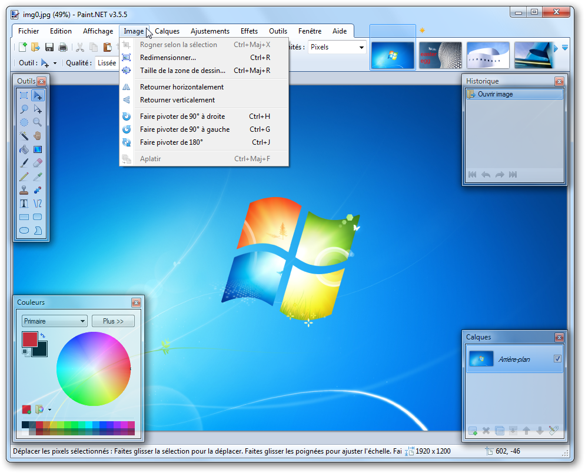
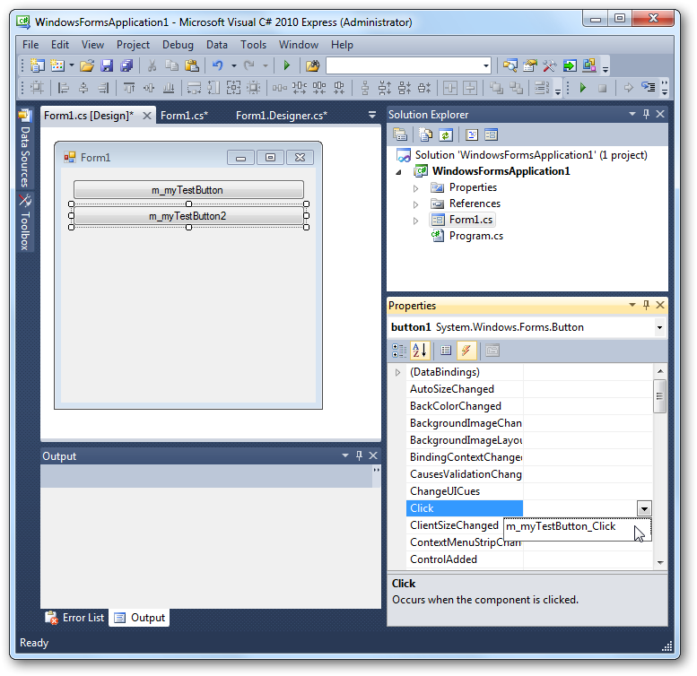

Vous avez entendu parler du langage C, du C++, et voilà qu'on vous présente maintenant le C# ! Encore un langage me direz-vous ? Oui, mais pas n'importe lequel !
Il existe des centaines de langages de programmation, comme le C, le C++, Python, Java... Chacun a ses avantages et défauts. Le C# (aussi écrit C Sharp et prononcé "cé sharp" voire "ci sharp" à l'anglaise) n'est peut-être qu'un langage de plus à vos yeux, mais il est en fait très important dans le monde de la programmation !
Alors, qu'est-ce qui caractérise le C# ?
Récent : il a été créé par Microsoft au début des années 2000, ce qui en fait un langage assez jeune (comparé au C, au C++ et à Java).
Idéal sous Windows & Windows Phone 7 : c'est le langage recommandé pour développer sous Windows aujourd'hui, mais on s'en sert aussi pour créer des applications Windows Phone 7, pour Silverlight, ASP...
Libre : le langage est ouvert, et on peut s'en servir pour développer des applications sous Linux notamment. Le fait qu'il soit issu de Microsoft ne l'empêche pas d'avoir son lot d'aficionados dans le monde du libre.
Inspiré de Java : même s'il a ses spécificités, il ressemble globalement plus au Java qu'au C ou au C++ contrairement à ce que son nom pourrait laisser penser.
Associé au framework .NET : un langage seul comme le C# ne permet pas de faire grand chose. On l'associe en général à une boîte à outils que l'on appelle le framework .NET (aussi écrit Dot NET et prononcé "dotte nette") qui offre toutes les possibilités que l'on peut imaginer : accès réseau, création de fenêtres, appel à une base de données...
Apprécié en entreprise : si Java reste un des langages les plus utilisés en entreprise, C# se présente comme un sérieux challenger. C'est aujourd'hui une compétence recherchée en entreprise.
Dans ce tout premier chapitre, nous allons découvrir ce qu'est le C#, son histoire et son rapport avec le framework .NET. D'ailleurs, vous ne savez pas ce qu'est un framework ? Ce n'est pas grave, je vous rappelle que c'est un cours pour débutants, tout cela sera expliqué ! :)
Avant d'aller plus loin, une petite préface vous présentera l'esprit du tutoriel et vous donnera quelques conseils pour le suivre dans les meilleures conditions.
Aux débutants ! Pas besoin d'avoir fait de la programmation avant pour suivre ce tutoriel ! Je vais donc faire de mon mieux pour détailler au maximum mes explications, c'est promis. :) Mon but est réellement de rendre ce tutoriel accessible pour les débutants.
Bien sûr, il y en a peut-être parmi vous qui ont déjà fait du C, du C++, du Java... Évidemment, si vous avez déjà programmé, ce sera plus facile pour vous (surtout pour la première partie qui présente les bases du langage). Attention néanmoins de ne pas vouloir aller trop vite : le C# ressemble à d'autres langages mais il a quand même ses spécificités !
Esprit du tutoriel
Nous allons découvrir ensemble de nombreuses choses en apprenant à programmer en C#. Il y aura bien entendu des TP pour vous faire pratiquer, afin que vous puissiez vous rendre compte de ce que vous êtes capables de faire après avoir lu plusieurs chapitres plus théoriques.
Néanmoins, je veux que vous soyez actifs ! Ne vous contentez pas de lire passivement mes explications, même lorsque les chapitres sont plutôt théoriques ! Testez les codes et les manipulations au fur et à mesure. Essayez les petites idées que vous avez pour améliorer ou adapter légèrement le code. Sortez un peu des sentiers battus du tutoriel : cela vous fera pratiquer et vous permettra de découvrir rapidement si vous avez compris ou non le chapitre. Pas d'inquiétude, si jamais vous bloquez sur quoi que ce soit qui n'est pas expliqué dans ce cours, la communauté qui sillonne les forums saura vous apporter son aide précieuse. Au passage, je tiens à vous rappeler que la section "Commentaires" est exclusivement destinée aux commentaires et n'a pas pour vocation de regrouper les questions concernant ce tutoriel ; les forums sont là pour ça.
Durée d’apprentissage
Il faut compter plusieurs semaines, voire plusieurs mois, pour atteindre un niveau solide, vous permettant de commencer à faire des choses sérieuses plutôt que de "bricoler". D'ailleurs merci de m'informer du temps que vous a pris la lecture de ce cours pour que je puisse indiquer aux autres lecteurs une durée moyenne de lecture. ;)
Composition du cours
Un lecteur attentif aura remarqué que le titre est "Apprenez à programmer en C# sur .NET" (qui se prononce "Apprenez à programmer en cé sharpe sur dotte nette").
Alors, allez-vous apprendre le C# ou le .NET ? En fait, vous allez voir que l'un ne va pas sans l'autre :
C# : c'est le langage, la "langue" dans laquelle vous allez parler. Vous allez par exemple pouvoir dire "Ouvre une fenêtre en haut à gauche de l'écran".
.NET : ce sont les outils dont vous avez besoin pour travailler. C'est bien beau de parler, avec le langage, mais sans le marteau et le tournevis pour mettre en place la fenêtre, vous ne feriez pas grand chose. .NET est un ensemble de composants informatiques, que l'on appelle framework, qui vous permet d'avoir accès à la création et manipulation de fenêtres, à l'écriture de fichiers, aux fonctionnalités réseau de la machine, à la manipulation de fichiers XML, etc.
Le tutoriel est loin d'être fini, vous ne voyez donc pas toutes les parties. Voici ce que j'envisage, pour l'instant, de traiter :
Les fondamentaux
Notions importantes
Créer des applications riches en design avec WPF
Notions avancées
Communiquer grâce au réseau
Le début de ce cours sera plutôt théorique. Pour savoir coder, il faut commencer par apprendre les bases du langage, c'est un passage obligé. ;) Petit à petit j'introduirai la pratique pour illustrer certains points importants ; cela vous permettra de mieux comprendre des fonctionnements et surtout de bien mémoriser le cours.
Le code
Parce que c'est la norme chez la quasi-totalité des développeurs professionnels, le code source que nous allons voir sera écrit en anglais. On prend l'habitude d'écrire en anglais car le code peut ensuite facilement être relu par des personnes d'autres nationalités, anglophones ou non. Imaginez qu'un espagnol souhaite corriger le code d'un allemand, et que le tout est relu par un français... Si chacun écrit dans sa langue natale, cela donne quelque chose de vraiment horrible (ça sent le vécu :-° ).
Rassurez-vous ! Ce n'est pas parce que, dans le code source, la "fenêtre" sera appelée "window" que ce cours sera plus difficile ! Toutes mes explications seront en français, et les commentaires dans le code pour vous guider seront en général en français.
J'ai fait le choix d'écrire le code source en anglais pour vous habituer à travailler avec du code anglais, car c'est ce que font les programmeurs dignes de ce nom (pas que chez les professionnels d'ailleurs). Pas besoin d'être un génie en anglais pour lire et écrire du code dans cette langue. ;)
En outre, je vous conseille de prendre les mêmes habitudes d'écriture que moi, aussi bien pour la mise en forme que pour la façon de nommer les choses. Pourquoi ? Parce que coder c'est bien, mais coder proprement, c'est mieux. En fait, il s'agit de conventions de codage respectées par "ceux qui savent programmer". Respecter ces conventions montre déjà que vous n'êtes pas le premier venu qui écrit n'importe quoi. Après assimilation de ce tutoriel, vous serez un vrai développeur qui a des habitudes de développeur. Il vous sera ainsi plus facile de communiquer avec d'autres personnes.
Allez plus loin !
N'hésitez pas à regarder d'autres tutoriels portant sur le sujet. Il est toujours bon de diversifier ses sources pour avoir différentes approches du sujet.
De manière générale, je vous recommande de ne pas hésiter à tester les codes que je présenterai au fur et à mesure. Surtout, si vous avez des idées pour les améliorer un peu, faites-le ! Ça ne marchera pas à tous les coups, mais cela vous fera beaucoup plus progresser que vous ne le pensez ! Ne comptez donc pas uniquement sur les TP pour pratiquer, ce serait vraiment dommage.
Sachez aussi que je suis ouvert à toutes remarques, critiques, questions, insultes... portant sur ce tutoriel. N'hésitez donc pas à poster des commentaires, surtout si votre message peut être utile pour d'autres personnes. Par contre, veuillez ne pas m'envoyer de MP, sauf en cas de force majeure, parce que je n'aurai pas le temps de vous répondre individuellement (la rédaction de ce tutoriel en elle-même nécessite déjà beaucoup de temps), et que s'il s'agit d'une demande d'aide, les forums sont là pour ça et on vous y répondra plus rapidement que moi.
Comme vous le savez, votre ordinateur exécute des programmes pour effectuer des tâches. Vous utilisez des programmes tous les jours :
votre navigateur web ;
votre traitement de texte ;
votre lecteur de musique ;
vos jeux vidéo.
Ce sont tous des programmes !
Votre ordinateur ne peut exécuter ces programmes que s'ils sont écrits dans le seul langage qu'il comprend, le binaire :
L'ordinateur lit les programmes en langage binaire.
Le processeur de votre ordinateur lit et comprend ce code, qui lui indique ce qu'il doit faire.
Mais... on ne va pas écrire des programmes en binaire quand même ?! C'est trop compliqué !
Bien sûr que non. Personne n'écrit sérieusement des programmes directement en binaire. C'est, comme vous le dites, trop compliqué. Voilà pourquoi on écrit les programmes dans des langages plus simples et plus "humains".
Comment créer des programmes "simplement" ?
Il existe des centaines de langages de programmation dont le but est de simplifier l'écriture de ce code binaire/assembleur. En effet, les langages que l'on utilise traditionnellement pour programmer, comme le C et le C++, nous permettent de créer des programmes bien plus facilement qu'en assembleur (binaire).
Je vais vous expliquer rapidement le principe de fonctionnement des langages "traditionnels" comme le C et le C++, puis je vous présenterai le fonctionnement du C#. Comme le C# est plus récent, on a pu améliorer son fonctionnement par rapport au C et au C++ comme nous allons le voir.
Langages traditionnels : la compilation
Avec des langages traditionnels comme le C et le C++, on écrit des instructions simplifiées, lisibles par un humain comme :
printf("Bonjour");
Ce n'est pas vraiment du français, mais c'est quand même beaucoup plus simple que le binaire ou l'assembleur vous avouerez ! :D
Bien entendu, l'ordinateur ne comprend pas ces instructions. Lui, il veut du binaire, du vrai. :pirate: Pour obtenir du binaire à partir d'un code écrit en C ou C++, on doit effectuer ce qu'on appelle une compilation. C'est un programme qui traduit le code source en binaire exécutable :
La compilation permet de traduire le code source en binaire.
Cette méthode est efficace et a fait ses preuves. De nombreuses personnes développent toujours en C et C++ aujourd'hui. Néanmoins, ces langages ont aussi un certain nombre défauts dus à leur ancienneté. Par exemple, un programme compilé (binaire) ne fonctionne que sur la plateforme sur laquelle il a été compilé. Cela veut dire que si vous compilez sous Windows, vous obtenez un programme qui fonctionne sous Windows uniquement (et sur un type de processeur particulier). Impossible de le faire tourner sous Mac OS X ou Linux simplement, à moins de le recompiler sous ces systèmes d'exploitation (et d'effectuer au passage quelques modifications).
Il faut compiler pour chaque environnement (système d'exploitation) différent.
Les programmes binaires ont ce défaut : ils ne fonctionnent que pour un seul type de machine. Pour les développeurs qui écrivent le code, c'est assez fastidieux à gérer.
Langages récents : le code managé
Les langages récents, comme le C# et le Java, résolvent ce problème de compatibilité tout en ajoutant de nombreuses fonctionnalités appréciables au langage, ce qui permet de réaliser des programmes beaucoup plus efficacement. :)
La compilation en C# ne donne pas un programme binaire, contrairement au C et au C++. Le code C# est en fait transformé dans un langage intermédiaire (appelé CIL, anciennement MSIL) que l'on peut ensuite distribuer à tout le monde. Ce code, bien sûr, n'est pas exécutable lui-même, car l'ordinateur ne comprend que le binaire.
Regardez bien ce schéma pour comprendre comment cela fonctionne :
Traitement du code pour en faire un programme exécutable.
Le code en langage intermédiaire (CIL) correspond au programme que vous allez distribuer. Sous Windows, il prend l'apparence d'un .exe comme les programmes habituels, mais il ne contient en revanche pas de binaire.
Lorsqu'on exécute le programme CIL, celui-ci est lu par un autre programme (une machine à analyser les programmes, appelée CLR) qui le compile cette fois en vrai programme binaire. Cette fois, le programme peut s'exécuter, ouf ! :D
Ça complique bien les choses quand même ! Est-ce bien utile ?
Cela offre beaucoup de souplesse au programmeur. Le code en langage intermédiaire (CIL) peut être distribué à tout le monde. Il suffit d'avoir installé la machine CLR sur son ordinateur, qui peut alors lire les programmes en C# et les compiler "à la volée" en binaire. Avantage : le programme est toujours adapté à l'ordinateur sur lequel il tourne.
Cette complexité ralentit légèrement la vitesse d'exécution des programmes (par rapport au C ou au C++), mais la différence est aujourd'hui vraiment négligeable par rapport aux gains que cela apporte. On parle de code managé.
Qu'est-ce que le langage C# ? Qui l'a créé ? Quel est le rapport avec .NET ? Et puis, qu'est-ce que c'est .NET ?
Autant de questions auxquelles nous allons répondre maintenant. :)
Le C# ressemble beaucoup au Java dont il est inspiré, bien que les deux langages présentent des différences notables. Il reprend aussi certaines notions du C/C++ mais s'en démarque sensiblement.
Seul, il ne sert pas à grand chose. En effet, le langage a besoin d'une boîte à outils pour exécuter facilement des actions courantes, comme ouvrir un fichier, communiquer sur le réseau, ouvrir une fenêtre, réduire une fenêtre, accéder à une base de données, etc.
Cette boîte à outils, que l'on utilise quasi-systématiquement en C#, c'est le framework .NET. C'est un peu comme un énorme couteau suisse qui offre toutes les possibilités dont vous pouvez rêver. ;)
Ce framework .NET n'est pas forcément lié au langage C#. Il est aussi possible de l'utiliser dans d'autres langages comme Visual Basic (plus simple, pour les programmeurs occasionnels), J# (plus proche de Java pour les habitués de Java) ou encore F# (langage fonctionnel).
Quelques langages permettant d'utiliser le framework .NET.
Les différentes couches du framework .NET. Image 010.010.20100
On dit que .NET n'est pas une technologie mais un ensemble de technologies (c'est vous dire si c'est énorme en termes de possibilités !). Je me doute bien que "ensemble de technologies" ne vous dit pas concrètement ce qu'est .NET alors voici ces technologies ci-contre (cf. image 010.010.20100).
Tous ces mots techniques ne doivent pas vous effrayer, c'est normal de ne rien y comprendre pour le moment. ^^
En revanche, il est intéressant de comprendre que .NET est divisé en plusieurs blocs (on parle de bibliothèques) qui offrent chacun des services différents.
Vous voyez en particulier les WinForms qui sont les fenêtres graphiques d'un programme, ADO.NET qui permet d'utiliser des bases de données, et WPF qui est une franche amélioration des WinForms (notamment sur le plan du design).
Aperçu historique
Anders Hejlsberg. Image 010.010.20000 C'est Microsoft qui est à l'origine du projet .NET et de son langage C#. En 2001, Anders Hejlsberg (le créateur du langage Delphi), employé chez Microsoft, crée le framework .NET (prononcé comme "dotte nette") et son langage phare : le C# (écrit C Sharp et prononcé comme "cé charpe"). Les deux sont complémentaires, comme nous allons le voir plus loin.
En 2002, la première version du .NET voit le jour et l'environnement de développement de Microsoft, Visual Studio, passe à la version 7.0 pour intégrer le .NET. S'ensuivent plusieurs versions importantes du framework .NET : 2.0, 3.0, 3.5, 4.0.
Actuellement, la dernière version du framework .NET est la 4.0, parue en avril 2010. Pour accompagner cette sortie, l'environnement de développement (le logiciel qui permet de programmer) a lui aussi évolué. Pour travailler en C#, .NET on utilise désormais Visual Studio 2010 (version 10.0). Les anciennes versions fonctionnent toujours mais il est recommandé de se mettre à jour.
Exemple de programme : Paint .NET
Paint .NET est un éditeur d'images gratuit entièrement écrit à l'aide du framework .NET, dont voici un screenshot :

Paint .NET, éditeur d'images gratuit entièrement écrit à l'aide du framework .NET. Image 010.010.20200
Voici un code minimal qui affiche "Hello World!" :
using System;
class Program
{
public static void Main()
{
Console.WriteLine("Hello World!");
}
}
Nous aurons l'occasion de comprendre ce que tout cela veut dire plus loin. ;)
Voici un code un peu plus long et complet qui gère (en partie) l'affichage d'une fenêtre, pour vous faire une idée. Je ne vous donne ce bout de code qu'à titre illustratif là encore :
#region File Description
//-----------------------------------------------------------------------------
// MainForm.cs
//
// Microsoft XNA Community Game Platform
// Copyright (C) Microsoft Corporation. All rights reserved.
//-----------------------------------------------------------------------------
#endregion
#region Using Statements
using System;
using System.IO;
using System.Reflection;
using System.Windows.Forms;
using Microsoft.Xna.Framework.Content;
using Microsoft.Xna.Framework.Graphics;
#endregion
namespace WinFormsContentLoading
{
/// <summary>
/// Custom form provides the main user interface for the program.
/// In this sample we used the designer to fill the entire form with a
/// ModelViewerControl, except for the menu bar which provides the
/// "File / Open..." option.
/// </summary>
public partial class MainForm : Form
{
ContentBuilder contentBuilder;
ContentManager contentManager;
/// <summary>
/// Constructs the main form.
/// </summary>
public MainForm()
{
InitializeComponent();
contentBuilder = new ContentBuilder();
contentManager = new ContentManager(modelViewerControl.Services,
contentBuilder.OutputDirectory);
/// Automatically bring up the "Load Model" dialog when we are first shown.
this.Shown += OpenMenuClicked;
}
/// <summary>
/// Event handler for the Exit menu option.
/// </summary>
void ExitMenuClicked(object sender, EventArgs e)
{
Close();
}
/// <summary>
/// Event handler for the Open menu option.
/// </summary>
void OpenMenuClicked(object sender, EventArgs e)
{
OpenFileDialog fileDialog = new OpenFileDialog();
// Default to the directory which contains our content files.
string assemblyLocation = Assembly.GetExecutingAssembly().Location;
string relativePath = Path.Combine(assemblyLocation, "../../../../Content");
string contentPath = Path.GetFullPath(relativePath);
fileDialog.InitialDirectory = contentPath;
fileDialog.Title = "Load Model";
fileDialog.Filter = "Model Files (*.fbx;*.x)|*.fbx;*.x|" +
"FBX Files (*.fbx)|*.fbx|" +
"X Files (*.x)|*.x|" +
"All Files (*.*)|*.*";
if (fileDialog.ShowDialog() == DialogResult.OK)
{
LoadModel(fileDialog.FileName);
}
}
/// <summary>
/// Loads a new 3D model file into the ModelViewerControl.
/// </summary>
void LoadModel(string fileName)
{
Cursor = Cursors.WaitCursor;
// Unload any existing model.
modelViewerControl.Model = null;
contentManager.Unload();
// Tell the ContentBuilder what to build.
contentBuilder.Clear();
contentBuilder.Add(fileName, "Model", null, "ModelProcessor");
// Build this new model data.
string buildError = contentBuilder.Build();
if (string.IsNullOrEmpty(buildError))
{
// If the build succeeded, use the ContentManager to
// load the temporary .xnb file that we just created.
modelViewerControl.Model = contentManager.Load<Model>("Model");
}
else
{
// If the build failed, display an error message.
MessageBox.Show(buildError, "Error");
}
Cursor = Cursors.Arrow;
}
}
}
Un IDE ("Environnement de Développement Intégré", en français) est un éditeur de texte qui propose toute une panoplie d'outils pour développer des logiciels. S'il est en théorie possible de programmer avec n'importe quel éditeur de texte, les IDE nous simplifient beaucoup la vie en colorant le code et en offrant des outils pour automatiser certaines tâches répétitives. Malheureusement, ils n'écrivent pas encore le code à notre place ! ;)
Lequel choisir ?
Logo de Visual Studio 2010 Express. Image 010.010.30000 Nous allons utiliser l'IDE associé au .NET, à savoir Visual Studio. Il ne fonctionne que sous Windows. Nous n'avons pas nécessairement besoin de la version complète, qui de surcroît est payante. Nous utiliserons la version gratuite qui est largement suffisante pour nous : Visual Studio Express.
Logo de Mono. Image 010.010.30100
Il existe une implémentation libre du .NET qui regroupe une grande partie de ses technologies : Mono. Il permet de faire tourner les programmes .NET sous Linux. Mono dispose même d'un IDE libre, MonoDevelop, qui permet de coder en C# sous Windows, Mac OS et Linux.
Dans ce cours, nous utiliserons uniquement Visual Studio car la majorité des gens disposent de Windows et qu'à la base c'est l'IDE fait pour le .NET (il offre donc la possibilité de travailler avec toutes les technologies de cette plate-forme).
Logo de SharpDevelop. Image 010.010.30101
Une autre alternative à Visual Studio est SharpDevelop, un IDE Open Source conçu pour développer du .NET. Par contre, il n'est disponible que pour Windows, au regret des utilisateurs de Mac OS X et de Linux.
Installation de Microsoft Visual C# 2010 Express Edition
Vous pouvez télécharger Visual Studio sur le site de Microsoft :
Si le lien n'est pas valide, allez sur cette page, cliquez sur "All - Offline Install ISO image file", en veillant à bien sélectionner "English" pour la langue.
Cet ISO contient Microsoft Visual C# 2010 Express. Vous aurez besoin d'un émulateur pour accéder au contenu de l'iso. DAEMON Tools Lite fait l'affaire ; si vous n'avez pas d'émulateur, installez-le et lancez-le. Avant toute chose, faites un clic-droit sur l'icône de DAEMON Tools Lite dans la barre des tâches et cliquez sur "Préférences":
Options de DAEMON Tools Lite dans la barre des tâches. Image 010.010.30200
Cochez la case "Auto montage" (cf. image 010.010.30300) ; cela permet de remonter automatiquement les images montées avant l'arrêt de votre ordinateur. Étant donné que l'installation de Visual Studio requiert un redémarrage, sans cette option une erreur se produira au redémarrage : l'installeur ne pourra plus accéder au disque virtuel.
Préférences de DAEMON Tools Lite. Image 010.010.30300
Montez une image avec l'ISO, ouvrez l'Explorateur Windows et lancez l'installeur du disque virtuel de Visual Studio. Sélectionnez Visual C# :
Cliquez sur Visual C# 2010 Express dans l'installeur. Image 010.010.30400
Avancez dans l'installation jusqu'à voir l'image 010.010.30500. Cochez la case pour SQL Server 2008. Il se peut que vous ayez aussi une case pour Silverlight ; si c'est le cas laissez-la cochée aussi (case absente sur l'image car sur mon PC Silverlight est déjà installé).
Installeur de Visual Studio 2010 Express. Image 010.010.30500
Lorsque l'installation commence, vous devriez avoir :
Progression de l'installation. Image 010.010.30600
Au bout d'un certain temps (pour ne pas dire un temps certain), l'installeur va vous demander de redémarrer votre PC :
Redémarrage requis pour continuer l'installation. Image 010.010.30700
Une fois l'installation terminée, vous devez voir :
Installation achevée avec succès. Image 010.010.30800
Cliquez sur "Help" > "Register Product" :
Enregistrement du produit. Image 010.010.30900
Cliquez sur "Obtain a register key online" pour enregistrer votre produit :
Obtention d'une clef d'activation. Image 010.010.31000
Cela va ouvrir une page web. Il faut que vous vous connectiez avec une Windows Live ID (adresse e-mail chez un service Microsoft ; ex: [email protected] ou [email protected] ou encore [email protected] devraient faire l'affaire). Vous devez à présent vous farcir tout le formulaire d'enregistrement. :p Vous y êtes malheureusement obligés si vous voulez pouvoir utiliser Visual C# Express autant que vous voudrez.
Vous allez recevoir votre clé d'enregistrement par e-mail. Dans certains e-mails, on vous donne aussi une clé pour essayer Visual Studio Pro, mais nous n'en avons pas besoin. Dans Visual Studio, cliquez à nouveau sur "Help" > "Register Product". Vous voyez la même fenêtre que tout à l'heure. Entrez votre clé et cliquez sur "Register Now". Si tout s'est passé correctement, vous voyez ça :
Enregistrement déjà réalisé. Image 010.010.31100
Et voilà, l'installation est finie. Maintenant, faisons un petit tour d'horizon de votre nouvel IDE.
Ce n'est pas très compliqué d'apprendre à se servir de Visual Studio alors je vais vous dire les grandes lignes. ;) Vous devez avoir quelque chose qui ressemble à ça :
Les principaux éléments de Visual Studio. Image 010.010.40000
1 : Rien de spécial, c'est une barre de menus.
2 : La boîte à outils est utile si vous voulez faire des applications avec des fenêtres. Elle contient des contrôles ; ce sont des objets que vous allez manipuler. Vous pouvez glisser-déposer des contrôles pour les ajouter à vos fenêtres.
3 : La vue "Design" vous permet de voir le rendu graphique de votre application.
4 : L'explorateur de la solution permet de voir l'arborescence de votre solution (la solution est l'ensemble des éléments qui servent à fabriquer l'application). Vous pouvez voir les différents projets, dossiers et fichiers qu'elle contient.
5 : En mode normal vous voyez la liste d'erreurs, d'avertissements, et d'autres messages.
6 : La fenêtre des propriétés affiche les caractéristiques de l'objet qui est sélectionné (toutes ne sont pas modifiables).
Fonctionnement
Le code d'un programme est placé dans des fichiers. Ces fichiers sont rangés dans des projets qui eux-mêmes font partie d'une solution. La solution est le plus grand "conteneur".
Bonus
Une autre raison pour laquelle j'ai choisi de travailler avec Visual Studio est que cet IDE fournit des fonctionnalités très intéressantes puisqu'elles nous simplifient le travail.
Le compilateur
Le compilateur vérifie la syntaxe de votre code. Si votre code est écrit correctement, le compilateur le convertit pour qu'il puisse par la suite être exécuté. Tant que votre programme n'est pas converti en CIL, il ne peut pas être utilisé. Vous pourriez avoir un autre compilateur, mais étant donné que Visual Studio en intègre déjà un, ne nous compliquons pas la vie ! Pour compiler votre solution, cliquez sur "Debug" > "Build Solution" (F6 sur les nouvelles versions et Ctrl + Shift + B sur les anciennes).
Le debugger
J'imagine que vous savez ce qu'est un bug : c'est une erreur dans un programme. Faire du debug correspond donc à traquer ces erreurs. Pour cela, on utilise un debugger ; il permet de lancer votre programme en mode test. C'est indispensable pour dénicher la plupart des bugs. En cas d'erreur, vous êtes avertis et on vous montre l'erreur, ce n'est pas comme quand une application crashe et qu'on doit soudainement fermer le programme. Pour ce faire, cliquez sur "Debug" > "Start Debugging" (F5). Pour afficher la barre d'outils pour le debug, cliquez sur "View" > "Toolbars" et assurez vous que "Debug" est sélectionné. Normalement, vous avez dans votre barre d'outils des boutons semblables à des boutons de lecture :
Barre d'outils relative au mode debug. Image 010.010.40100
Dans l'ordre, de gauche à droite :
Start Debugging (en mode normal) : pour lancer le programme en mode debug. Continue (en mode debug): pour continuer le code jusqu'au point d'arrêt suivant. S'il n'y en a plus, le programme continue sans s'arrêter.
Stop Debugging : pour faire stop (en mode debug).
Show Next Statement : lorsque vous avez fait pause, cela permet de vous resituer la ligne de code qui s'apprête à être exécutée.
Step Into (F11) : exécute le code en s'arrêtant à chaque ligne et en rentrant dans les fonctions appelées sur la ligne, si possible.
Step Over (F10) : exécute le code en s'arrêtant à chaque ligne.
Step Out (Shift + F11) : exécute tout le code du bloc courant et s'arrête.
Les deux derniers boutons sont inutiles pour nous.
Dans votre code, vous pouvez mettre des points d'arrêt (breakpoints) sur une ligne. Lorsque cette ligne s'apprête à être exécutée, le programme passe en pause et dans Visual Studio vous pouvez voir la valeur de vos variables. Pour mettre un point d'arrêt, appuyez sur F9 quand le curseur est sur une ligne. Vous pouvez aussi cliquer à gauche d'une ligne : à gauche de son numéro et dans la partie légèrement plus grise. Par défaut, les numéros de lignes ne sont pas affichés. Pour les afficher, allez dans "Tools" > "Options", cochez la case "Show all settings" tout en bas à gauche de la nouvelle fenêtre, ouvrez ensuite le nœud "Text Editor", cliquez sur "All languages" et cochez la case "Line numbers" dans la section "Display" à droite :
Options de Visual Studio. Image 010.010.40101
Voici à quoi ressemble un point d'arrêt en mode normal :
Allure d'un point d'arrêt quand vous écrivez du code. Image 010.010.40200
En mode debug, on obtient ceci :
Le point d'arrêt bloque l'exécution avant la ligne. Image 010.010.40300
La petite infobulle en-dessous indique que la variable myString vaut null. Elle ne vaut pas encore "Hello world!" car le point d'arrêt met en pause le programme avant l'exécution de la ligne.
L'IntelliSense
Lorsque vous commencez à écrire quelque chose, Visual Studio vous propose automatiquement la fin de votre mot grâce à l'IntelliSense. Pour déclencher l'IntelliSense manuellement (si ça ne se fait pas déjà tout seul), appuyez sur Ctrl + Espace. Exemple :
L'IntelliSense à l’œuvre. Image 010.010.40400
Que diriez-vous d'entrer dans le vif du sujet ? On attaque dès le prochain chapitre !
La console, aussi appelée "invite de commandes" ou "shell" est une fenêtre au fond noir (en général) dans laquelle on entre sous forme de texte des commandes à exécuter (ce programme est situé ici : C:\Windows\System32\cmd.exe). Ça n'a donc rien à voir avec une console de salon comme la Xbox 360 ou la PS3 (à l'oreillette on me dit que la Wii est une console ; ah bon ? :p).
La console va nous permettre d'afficher des chaînes de caractères. Nous allons commencer avec elle pour avoir un rendu visuel de ce que fait le code.
Comme dit précédemment, la solution est ce qui va contenir notre programme. Une solution est faite de projets, qui contiennent chacun des fichiers de code, et des références pour charger les assemblies. Pour faire simple, une assembly contient du code déjà écrit et peut donc être appelée pour offrir ses services. Nous allons créer une nouvelle solution ; celle-ci contiendra déjà un projet et des références vers les assemblies de base (en l'occurrence de quoi utiliser la console).
D'abord, lancez Visual Studio et cliquez dans la barre des menus sur "File" > "New Project". Vous devriez avoir ça :
Les différents modèles que vous pouvez utiliser. Image 020.010.10000
Cliquez sur "Cancel" pour revenir à la fenêtre principale. Allez dans "Tools" > "Options". La fenêtre d'options s'affiche. Cochez la case "Show all settings" en bas à gauche de cette fenêtre. Allez dans "Projects and Solutions". Sélectionnez "General". Vous devriez avoir ça (votre nom d'utilisateur est à la place de "Narvarth") :
Options de Visual Studio. Image 020.010.10100
Cochez toutes les cases à droite et cliquez sur OK. Refaites "File" > "New Project". Magie ! :magicien: Après avoir sélectionné "Console Application", vous devez voir :
Cette fois, on dispose de plus d'options. Image 020.010.10200
Vous obtenez plus de détails maintenant :
vous pouvez choisir où enregistrer votre solution en cliquant sur Browse... (Parcourir...) ;
vous pouvez donner un nom à votre solution et au premier projet qu'elle va contenir.
Donnez un nom à votre solution et à votre projet et cliquez sur OK quand vous êtes prêts. Voici maintenant ce que vous voyez :
Code déjà contenu dans le modèle d'un projet console. Image 020.010.10300
Vous voyez l'arborescence de votre solution dans l'explorateur de solution. À gauche vous voyez le code qui se trouve dans le fichier Program.cs (l'extension "cs" venant de "C Sharp"). Il existe d'autres extensions, notamment "resx" pour les fichiers de ressources. Nous verrons cela en temps utile.
Pour tester du code, mettez-le entre les deux accolades du bloc Main (sauf mention contraire de ma part).
Nous allons utiliser une méthode déjà créée qui va afficher du texte dans la console, c'est WriteLine. Cette méthode se situe dans la classe Console, donc pour y accéder il faut écrire Console.WriteLine. Vous aurez plus d'explications quand nous verrons les classes et vous pourrez ainsi mieux comprendre. ;) Pour l'instant, regardez comment ça fonctionne dans l'exemple suivant. Console.WriteLine("Hello World!"); affiche Hello World! en console, donc pour tester, écrivez :
using System;
namespace MyFirstApp
{
class Program
{
static void Main(string[] args)
{
Console.WriteLine("Hello World!");
}
}
}
Pour fermer la console et terminer le programme, appuyez sur une touche ou fermez directement la fenêtre de la console.
Pour générer votre application (pour qu'elle soit compilée et convertie en .exe), cliquez sur "Debug" > "Build Solution" (F6 sous les nouvelles versions de Visual Studio, Ctrl + Shift + B sous les anciennes). Le volet "Output" s'ouvre et vous devez voir quelque chose comme :
Notez le changement dans la fenêtre "Output". Image 020.010.30000
"1 succeded" m'indique qu'un projet a bien été compilé. Notez que vous êtes aussi informés si une erreur survient.
Ouvrez l'explorateur de fichiers et allez dans le dossier de votre solution. Allez ensuite dans les dossiers "bin" puis "Debug". Vous trouverez un fichier .exe portant le nom de votre solution. Lancez cet exécutable ; vous voyez apparaître et disparaître en un clin d'œil la console. Normal, pour le moment votre programme ne fait rien, alors sitôt ouvert il a fini et se ferme.
Je vais maintenant vous apprendre à lancer cet exécutable, non pas depuis l'explorateur, mais depuis la console. La console doit se trouver là : C:\Windows\System32\cmd.exe. Je vous conseille d'en faire un raccourci sur votre bureau car nous allons en avoir besoin assez souvent. Lancez cet exécutable (qui est l'invite de commandes), et vous voyez :
La console Windows. Image 020.010.30100
Copiez l'adresse de votre application jusqu'au dossier "Debug". Pour moi c'est "C:\Users\Narvarth\Documents\Visual Studio 2008\Projects\ConsoleApplication1\ConsoleApplication1\bin\Debug". Écrivez cd, laissez un espace, et collez l'adresse.
Faites un clic droit puis cliquez sur coller.
Appuyez sur Entrée pour effectuer la commande.
"cd" signifie "change directory" (changer de dossier) : on se téléporte dans le dossier où se trouve notre programme.
Tapez ensuite le nom de votre solution suivi de ".exe" et appuyez sur Entrée. Il ne va rien se passer car le programme ne fait rien. Voici ce que ça donne chez moi :
Lancement du programme via la console. Image 020.010.30200
Voilà, maintenant que vous savez un peu travailler avec la console, vous allez pouvoir tester le code que je vous donne.
Comme son nom l'indique, une variable est quelque chose qui varie. Sa représentation la plus courante est une boîte qui contient des informations.
Les deux éléments essentiels d'une variable sont sa valeur (et donc son type) et son nom. Nous parlerons des types juste après. Le nom, c'est vous qui le fixez ; il est unique et permet de n'identifier qu'une seule variable. La valeur, quant à elle, peut être à peu près n'importe quoi, et peut être modifiée autant que l'on veut. Pour schématiser, la variable est la boîte, son nom est écrit dessus, sa valeur est ce qu'elle contient, et son type est la forme de la boîte.
Donner un nom à ses variables
En C#,
le nom d'une variable est obligatoirement écrit avec des caractères alphanumériques (de préférence sans accent), ainsi que le underscore '_' (sans les apostrophes) : abcdefghijklmnopqrstuvwxyzABCDEFGHIJKLMNOPQRSTUVWXYZ_0123456789 ;
le nom doit forcément commencer par une lettre (underscore '_' compris) ;
le nom ne doit pas être le nom d'un type ou d'une classe déjà définis, d'un mot-clef du langage, ...(il ne doit pas être déjà pris). Bref, il ne faut pas que la confusion soit possible.
Types de variables de base
En C#, les variables possèdent un type qui précise la nature des informations stockées. L'inconvénient que remarquent surtout ceux qui ont l'habitude d'un langage sans typage (tel que le PHP) est le manque de "souplesse" : certaines choses peuvent être écrites plus simplement dans ce langage qu'en C#. Par exemple, le chiffre 2 et sa représentation en caractère '2' peuvent éventuellement être utilisés l'un à la place de l'autre, ce qui n'est pas le cas en C#. L'avantage est que vous savez exactement ce que vous manipulez. Cela permet d'éviter certaines erreurs, de bien comprendre ce que votre code fait, et de pouvoir l'optimiser. C'est une habitude à prendre ; ensuite vous redouterez le "laxisme" de certains langages !
Le C# dispose de types de base qui permettent de représenter des informations dont la nature est courante, comme des nombres, des caractères et des chaînes de caractères. Il existe un nombre infini de types étant donné que l'on peut construire un nouveau type à partir de ceux qui existent déjà. C'est ce que nous verrons quand nous étudierons les classes.
Voici un tableau exhaustif contenant les types de base du C# :
Type C#
Type .NET
Signification
Taille en mémoire (en octets)
Domaine de valeurs
char
Char
character (caractère)
2
caractère Unicode (UTF-16) allant de U+0000 à U+ffff
string
String
chaîne de caractères
variable
référence sur une séquence de caractères Unicode
int
Int32
integer (nombre entier)
4
[-231; 231-1]
uint
UInt32
unsigned integer (nombre entier non signé)
4
[0; 232-1]
long
Int64
nombre entier long
8
[-263; 263-1]
ulong
UInt64
unsigned long (nombre entier long non signé)
8
[0; 264-1]
sbyte
SByte
signed byte (octet signé)
1
[-27; 27-1]
byte
Byte
octet
1
[0; 28-1]
short
Int16
nombre entier court
2
[-215; 215-1]
ushort
UInt16
unsigned short (nombre entier court non signé)
2
[0; 216-1]
float
Single
flottant (nombre réel)
4
±1,5*10-45 à ±3,4*10+38 (7 chiffres de précision)
double
Double
double flottant (nombre réel)
8
±5,0*10-324 à ±1,7*10+308 (15 à 16 chiffres de précision)
decimal
Decimal
nombre décimal
16
±1,0*10-28 à ±7,9*1028 (28 à 29 chiffres significatifs)
bool
Boolean
booléen
1
true / false
object
Object
référence d'objet
variable
référence d'objet
Chacun des types C# présentés est un alias du type .NET associé, cela signifie que lorsque que vous écrivez par exemple int, c'est comme si vous aviez écrit System.Int32. Pour raccourcir et par habitude, on privilégie le type C# au type .NET.
Illustration avec sizeof et typeof
sizeof permet de connaître la taille (en octets) occupée en mémoire par une variable de type valeur. Nous verrons très bientôt ce que cela veut dire ; pour faire simple, il faut que la taille soit fixe. Par exemple, on ne peut pas écrire sizeof(string), car une chaîne de caractères peut être de la taille que l'on veut. D'autre part, multiplier le nombre de caractères par la taille d'un seul caractère ne suffit pas non-plus ; en effet l'objet string contient en mémoire plus d'informations qu'une simple chaîne de caractères (cf. ce site).
typeof permet de connaître le type d'une variable.
Par exemple, le code suivant...
int i = 10;
string s = "Hello world!";
char c = 'a';
Console.WriteLine("i est de type " + typeof(int) + " et occupe " + sizeof(int) + " octet(s) en mémoire.");
Console.WriteLine("s est de type " + typeof(string) + ".");
Console.WriteLine("c est de type " + typeof(char) + " et occupe " + sizeof(char) + " octet(s) en mémoire.");
...affichera :
i est de type System.Int32 et occupe 4 octet(s) en mémoire.
s est de type System.String.
c est de type System.Char et occupe 2 octet(s) en mémoire.
Conventions d'écriture pour le typage des données écrites "en dur" dans le code
Dans votre code, vous pouvez directement entrer des valeurs à affecter aux variables. La question qui se pose est : de quel type sont les données entrées ? En effet, par exemple le chiffre 2 doit-il être compris comme un int, un uint, un double, ... ? Pour pallier à ce problème, des conventions ont été établies.
Un nombre entier est considéré comme un int s'il tient dans la plage de valeurs d'un int (exemple : -123), et comme un long s'il ne tient pas dans la plage de valeurs d'un int mais dans celle d'un long (exemple : 5111222333). Un nombre écrit avec un u à la fin symbolise un uint. Exemple : 2u (ou 2U). Un nombre écrit avec un l à la fin symbolise un long. Exemple : 2l (ou 2L). Un nombre écrit avec ul à la fin symbolise un ulong. Exemple : 2ul (ou 2UL). Un nombre écrit avec une partie décimale, ou avec un d à la fin symbolise un double. Exemple : 2.0 ou 2d (ou 2D). Un nombre écrit avec un f à la fin symbolise un float. Exemple : 2.0f ou 2f (ou 2F). Un nombre écrit avec un m à la fin symbolise un decimal. Exemple : 2.0m ou 2m (ou 2M).
D'autre part, les guillemets (") servent à encadrer une chaîne de caractères et les apostrophes (') servent à encadrer un caractère. Exemple : "Bonjour tout le monde" et 'B'.
Pour utiliser une variable, il faut d'abord la déclarer (la créer) : on réserve une partie de la mémoire pour cette variable. On spécifie ce qu'elle représentera (un entier, un caractère, une image, ...) en indiquant son type. La syntaxe est : type nom;
Valeur par défaut
Une fois que cette ligne est exécutée, de la place est allouée en mémoire pour stocker une valeur.
Par exemple, le code suivant causera une erreur :
static void Main(string[] args)
{
int myInt;
Console.WriteLine(myInt);
}
Le compilateur vous dit "Use of unassigned local variable 'myInt'". En fait, le compilateur crie parce qu'il ne sait pas ce que doit valoir notre entier. Il faut donc que vous lui donniez une valeur, par exemple :
Comme je vous le disais, vous n'êtes pas toujours contraints à spécifier de valeur : dans certains cas, c'est la valeur par défaut qui est automatiquement utilisée. Nous étudierons cela dans le chapitre sur les classes, mais ça ne fait pas de mal d'apprendre dès maintenant les valeurs par défaut :
la valeur par défaut de tout type numérique est 0, adapté au type (0.0 pour un float ou un double) ;
la valeur par défaut d'une chaîne de caractères (string) est null, et non pas la chaîne vide, qui est représentée par string.Empty ou encore "" ;
la valeur par défaut d'un caractère (char) est '\0'.
Attribuer une valeur
Voici comment créer un entier nommé myInteger et ayant la valeur 3 :
int myInteger;
myInteger = 3;
Pour raccourcir, écrivez : int myInteger = 3;. Cela revient exactement au même : on rassemble la déclaration et l'initialisation. Vous conviendrez que c'est mieux car c'est plus concis.
Voici comment créer une chaîne de caractères valant "Hello world!" et un caractère ("char" signifie "caractère" en anglais) valant 'a' :
Il existe deux sortes de types : les types valeur (notamment les structures) et les types référence (notamment les classes).
Type valeur
Une variable de type valeurcontient directement l'information. Cela signifie que lorsque cette variable est modifiée, la valeur qu'elle contenait est aussi modifiée.
Cela ne m'a pas paru indispensable de vous apprendre à créer des structures, par contre il faut que vous connaissiez des structures élémentaires. Les types numériques de base sont des structures, donc se comportent comme des types valeur. Le type string est un peu spécial : c'est une classe, mais elle se comporte comme un type valeur.
Type référence
Une variable de type référencecontient l'adresse de l'emplacement mémoire où se trouve l'information. Du coup, une variable qui a la même référence qu'une seconde variable peut être automatiquement changée quand la seconde variable est modifiée.
Nous verrons tout cela bien plus en détail avec les classes. Je voulais juste introduire cette notion car c'est quelque chose de fondamental et je pense que plus c'est pris tôt, plus vous aurez le temps d'y revenir petit à petit pour bien cerner le concept.
Une énumération est une liste de valeurs qui a un type unique. Ce type est le nom de l'énumération.
Un exemple vaut toujours plus qu'un long discours donc voyez plutôt comment déclarer une énumération désignant les différents temps (dans l'ordre : inconnu, ensoleillé, nuageux, pluvieux) :
enum Weather
{
Unknown,
Sunny,
Cloudy,
Rainy
}
Chaque valeur doit être suivie d'une virgule, sauf la dernière pour laquelle ce n'est pas obligé (mais vous pouvez quand même le faire ; par contre, c'est moche :p ). Vous pouvez aussi mettre un point-virgule après l'accolade fermante, mais ce n'est pas nécessaire pour la compilation.
Une fois que cela est fait, vous pouvez déclarer une variable de type Weather comme suit :
Weather todaysWeather = Weather.Sunny;
La variable todaysWeather est ici initialisée à la valeur Sunny.
Si vous ne faites que déclarer la variable, sans l'initialiser, elle prendra automatiquement la première valeur. Ainsi, Weather todaysWeather; correspond ici à Weather todaysWeather = Weather.Unknown;.
Ce n'est pas dit que vous ayez toujours besoin des énumérations, mais sachez qu'elles sont très utiles quand même. Vous verrez des exemples dans la 2e partie.
Ils s'utilisent sur des variables qui représentent en général des nombres.
Le +
Il sert à additionner deux nombres.
int myInt = 1 + 1;
Après exécution, myInt vaut 2.
Il peut aussi servir pour des chaînes de caractères :
string s = "deux " + "mots";
Après exécution, s vaut "deux mots".
Le -
Il sert à effectuer une soustraction.
int myInt = 3 - 4;
Après exécution, myInt vaut -1.
Le *
Il sert à effectuer une multiplication.
int myInt = 2 * 3;
Après exécution, myInt vaut 6.
Le /
Il sert à effectuer une division.
int myInt = 5 / 2;
Ainsi, après exécution, myInt vaut 2.
double d = 5.0 / 2;
Après exécution, d vaut 2.5. Le fait d'avoir mis un point (qui correspond en français à une virgule) indique que l'on ne veut pas traiter avec des entiers. 2 est bien un entier mais est, ici, automatiquement converti pour que l'opération fonctionne.
Le %
Il permet d'obtenir le reste d'une division euclidienne : si a = b*q + r, avec 0 <= r < q, alors a % b vaut r.
int myInt = 21 % 10;
Après exécution, myInt vaut 1 car 21 = 2*10 + 1.
int i = 5;
int j = i + 7;
Après exécution, i vaut 5 et j vaut 5 + 7 = 12.
Simplifications d'écriture
Il est possible (et préférable) d'écrire :
i += 5; à la place de i = i + 5;
i -= 5; à la place de i = i - 5;
i *= 5; à la place de i = i * 5;
i /= 5; à la place de i = i / 5;
i %= 5; à la place de i = i % 5;
Pour simplifier au maximum votre code, plutôt que d'écrirei = i + 1; ou i += 1;écrivezi++;
Priorités des opérateurs
+ et - ont une priorité rigoureusement identique et sont évalués dans l'ordre d'apparition (il en va de même pour * et /, qui en plus sont prioritaires devant + et -). Dans le doute, mettez des parenthèses pour être sûrs des priorités. Pensez aussi à ceux qui vous reliront peut-être : codez de façon claire.
En électronique, ils permettent de comparer deux bits ensemble. Un bit vaut soit 0 (pas de tension) soit 1 (présence de tension).
En C#, ils permettent de comparer deux booléens. Le terme "booléen" vient de George Boole, mathématicien anglais à qui on doit l'algèbre de Boole : théories mathématiques sur les comparaisons d'assertions (une assertion est une proposition pouvant être soit vraie, soit fausse).
En termes binaires: 0 correspond à false (faux) 1 correspond à true (vrai)
Les opérateurs sont représentés par des symboles (ici entre parenthèses). Dans le code vous devez impérativement utiliser les symboles et non pas le nom des opérateurs.
NOT (!)
Opérande
Résultat
false
true
true
false
Le résultat est l'inverse de l'opérande. Ce qui donne en notation binaire : !0 = 1 !1 = 0
AND (&&)
Opérandes
Résultat
false
false
false
false
true
false
true
false
false
true
true
true
Les deux opérandes doivent valoir true pour que le résultat soit true. 0 AND 0 = 0 0 AND 1 = 0 1 AND 0 = 0 1 AND 1 = 1
D'un point de vue électronique, on peut écrire "+" à la place de "OR" et "." (point de la multiplication) à la place de "AND". Vous pouvez regarder des articles sur l'algèbre de Boole pour apprendre à maîtriser les opérateurs logiques.
OR (||)
Opérandes
Résultat
false
false
false
false
true
true
true
false
true
true
true
true
Un au moins des deux opérandes doit valoir true pour que le résultat soit true. 0 OR 0 = 0 0 OR 1 = 1 1 OR 0 = 1 1 OR 1 = 1
XOR (^)
Opérandes
Résultat
false
false
false
false
true
true
true
false
true
true
true
false
C'est un ou exclusif : pareil que pour OR mais si les deux sont true, le résultat sera false. 0 XOR 0 = 0 0 XOR 1 = 1 1 XOR 0 = 1 1 XOR 1 = 0
La syntaxe est : variableÀModifier = nouvelleValeurDeLaVariable; Par exemple, si myInt est un entier, l'instruction myInt = 2; remplace la valeur existante de myInt par 2.
Lignes de code
Résultat
int myInt;
Un espace mémoire est alloué pour stocker la valeur de myInt. À cet instant myInt n'a pas de valeur.
(lignes intermédiaires)
myInt = 2;
La valeur de myInt est modifiée. myInt vaut à présent 2.
Pour faire une assignation (=affectation), on peut aussi utiliser une autre variable ; la syntaxe est alors : variableÀModifier = autreVariable;
Que se passe-t-il à l'exécution ?
En fait cela dépend. Si les variables sont de type valeur, on récupère la valeur de autreVariable et on l'écrit en mémoire là où est stockée variableÀModifier. Si autreVariable ne contient pas une valeur mais une référence, alors les deux variables variableÀModifier et autreVariable vont référencer le même objet. Après l'affectation variableÀModifier = autreVariable;, si l'une des deux variables est modifiée, l'autre le sera donc aussi.
Les opérateurs de comparaison
Opérateur ==
Il retourne true si les deux opérandes sont égaux et false si ce n'est pas le cas.
bool numbersAreEqual = (2 == 5);
2 n'est pas égal à 5 donc après exécution numbersAreEqual vaut false.
Opérateur !=
Il retourne true si les deux opérandes sont différents et false si ce n'est pas le cas.
bool numbersAreDifferent = (2 != 5);
2 n'est pas égal à 5 donc après exécution numbersAreDifferent vaut true.
Opérateurs d'inégalités
Vous les connaissez, ce sont des opérateurs mathématiques simples :
< (inférieur)
<= (inférieur ou égal)
> (supérieur)
>= (supérieur ou égal)
L'opérateur ternaire "?"
Il s'utilise de cette façon : a ? b : c;. a doit être une expression conditionnelle (qui retourne true ou false). À l'exécution, cette expression est évaluée. Si elle vaut true, l'expression b sera exécutée et son résultat sera retourné ; l'expression c sera ignorée. Si elle vaut false, l'expression c sera exécutée et son résultat sera retourné ; l'expression b sera ignorée.
Voici un exemple :
string myString = (2 == 5) ? "les nombres sont égaux" : "les nombres ne sont pas égaux";
Après exécution, myString vaut "les nombres ne sont pas égaux" car (2 == 5) a retourné false.
Mémorisez bien tous ces hiéroglyphes car vous en aurez tout le temps besoin !
Dans un programme, tout le code ne s'exécute pas forcément. Vous pouvez faire s'exécuter certaines parties du code si des conditions sont remplies.
La route me semble être une bonne analogie. Il n'y a pas qu'un seul chemin à emprunter pour se rendre à un endroit. Suivant le lieu où vous désirez vous rendre, vous n'allez pas faire la même chose. Eh bien ici c'est pareil ! ;)
"if" est un mot anglais qui signifie "si". C'est un mot-clef du langage C# qui permet de n'effectuer du code que dans certaines conditions. La syntaxe est la suivante :
if (condition)
{
// Code à exécuter si la condition est satisfaite.
}
condition est une expression qui retourne un booléen : soit true, soit false :
true : le code entre les accolades est exécuté.
false : le code entre les accolades n'est pas exécuté.
Commenter judicieusement son code est un travail subtil. Il faut savoir expliquer ce qui est susceptible de ne pas être compris par un relecteur, tout en ne tombant pas dans l'excès (c'est-à-dire ne pas commenter chaque ligne, ou du code basique).
else if
"else if" veut dire "sinon, si". Placé après un if, il permet d'exécuter du code qui ne remplit pas la première condition, mais la deuxième. La syntaxe est la suivante :
if (condition1)
{
// Code à exécuter si la condition est satisfaite.
}
else if (condition2)
{
// Code à exécuter si la première condition n'est pas satisfaite mais que la deuxième l'est.
}
Vous pouvez mettre autant de else if que vous voulez.
else
"else" signifie "sinon". Placé après un if simple, ou un if et un (ou plusieurs) else if, il permet d'exécuter le code qui ne satisfait aucune condition précédente. La syntaxe est la suivante :
if (condition)
{
// Code à exécuter si la condition est satisfaite.
}
else
{
// Code à exécuter si la première condition n'est pas satisfaite.
}
Les trois expressions peuvent se combiner. Voici un exemple où age est un entier représentant l'âge d'un client à un restaurant :
if (age < 4)
{
// gratuit
// 0 < age < 4
}
else if (age < 12)
{
// Tarif enfant
// 4 <= age < 12
// en effet, age n'est pas strictement inférieur à 4, et est strictement inférieur à 12.
}
else if (age < 18)
{
// Tarif ado
// 12 <= age < 18
}
else
{
// Tarif adulte
// 18 <= age
}
// suite du code
Les boucles conditionnelles permettent de répéter des actions tant que certaines conditions sont satisfaites. Dès lors que ces dernières ne le sont plus, le programme "sort de la boucle" et exécute le code qui suit.
while
"while" veut dire "tant que". La syntaxe est :
while (condition)
{
// Code qui s'exécute tant que la condition est satisfaite.
}
while (condition)
{
if (needToExit)
{
break;
}
// Code à exécuter en boucle
}
Une fois que break est exécuté, plus aucune ligne de code à l'intérieur des accolades de la boucle n'est exécutée. Ainsi la ligne qui s'exécute après le break est celle située juste après l'accolade fermante.
Puisqu'un exemple permet toujours de mieux comprendre, je vous propose un bout de code pour faire un compte à rebours qui débute à 100 :
int i = 100;
while (i > 0)
{
// On décrémente i
i--;
}
do ... while
L'équivalent français serait "fait ... tant que". Cela permet d'exécuter les instructions une première fois obligatoirement, et de répéter l'exécution si besoin est. La syntaxe est :
do
{
// Code qui s'exécute une 1ère fois obligatoirement et ensuite en boucle tant que la condition est satisfaite.
}
while (condition);
Regardez ce que devient notre compte à rebours avec for :
int i;
for (i = 100; i > 0; i--)
{
}
On peut tout aussi bien écrire :
for (int i = 100; i > 0; i--)
{
}
continue
À la différence de break;, continue; ne s'utilise pas pour terminer la boucle, mais pour passer directement à l'élément suivant. Voici sans plus attendre un exemple, qui vous apportera plus qu'un long discours :
for (int i = 1; i <= 10; i++)
{
if (i < 9)
{
continue;
}
// La ligne suivante n'est pas exécutée si i est strictement inférieur à 9.
Console.WriteLine(i);
}
Vous verrez donc :
9
10
Notez bien que la boucle ne s'arrête pas, seules les instructions relatives à l'élément en cours ne sont plus exécutées.
Les tests de conditions sont vraiment très courants ils sont présents même dans les morceaux de code les plus simples. Ce chapitre est donc un incontournable de plus !
Les méthodes (aussi appelées "fonctions" dans de nombreux langages) sont là pour nous simplifier la vie : plutôt que de mettre tout le code à la suite, on structure notre programme en créant des méthodes.
Une méthode est une suite d'instructions regroupées sous un nom ; elle prend en entrée des paramètres et retourne un résultat. Notez qu'une méthode peut ne prendre aucun paramètre en entrée ou ne retourner aucun résultat.
Les méthodes ont de nombreux avantages. Le premier est sans doute de ne pas avoir à réécrire beaucoup de lignes de code à chaque fois qu'on veut faire une certaine opération. Cela permet aussi de rajouter un aspect dynamique au code : suivant les paramètres passés, le résultat retourné n'est pas le même.
Voici la syntaxe pour une méthode prenant deux paramètres en entrée et ne retournant rien :
void nomDeLaMéthode(typeDu1erParamètre nomDu1erParamètre, typeDu2eParamètre nomDu2eParamètre)
{
// Code à exécuter quand la méthode est appelée.
}
Voici la syntaxe pour une méthode ne prenant aucun paramètre en entrée et retournant xxx (xxx étant une variable) :
typeDuRésultat nomDeLaMéthode()
{
// Code à exécuter quand la méthode est appelée.
return xxx;
}
void
veut dire "vide", "dépourvu de", ... Quand une méthode ne retourne rien, le type de retour est donc void.
Besoin d'exemples ?
Pas de soucis ! Créons une méthode qui multiplie un nombre x par un nombre y (nous allons travailler avec des entiers). Voici comment faire :
int Multiply(int x, int y)
{
return x*y;
}
Nous allons utiliser une méthode déjà créée qui va afficher du texte dans la console, c'est WriteLine. Cette méthode se situe dans la classe Console, donc pour y accéder il faut écrire Console.WriteLine. Vous aurez plus d'explications quand nous verrons les classes et vous pourrez ainsi mieux comprendre. ;) Pour l'instant, regardez comment ça fonctionne dans les exemples suivants.
Voici une autre méthode, qui affiche un Hello World! dans le cadre "Output" de Visual Studio si vous avez un programme avec des fenêtres (par exemple des WinForms), et dans la console dans le cas contraire.
Rappel : la console, plus connue sous le nom d'éditeur de commandes, est la fenêtre où du code est écrit en général en vert sur fond noir.
Console.WriteLine("Hello world!"); est un appel à la la méthode WriteLine, à laquelle nous passons en paramètre une chaîne de caractères qui vaut "Hello world!".
L'appel se fait comme ceci : nomDeLaMéthode(paramètresSéparésParUneVirgule);.
Pourquoi c'est Console.WriteLine au lieu de simplement WriteLine ?
Console est une classe dans laquelle est définie la méthode WriteLine. Ne nous attardons pas sur ce point qui fera l'objet d'explications détaillées dans la suite de cette 1ère partie théorique.
On pourra donc écrire (si l'on a créé la méthode Multiply) :
int number1 = 3;
int number2 = 2;
int number3 = Multiply(number1, number2);
Console.WriteLine(number3);
Que se passe-t-il à la ligne no3 ?
number1 et number2 sont évalués : on va récupérer en mémoire leur valeur, que l'on passe à la méthode. La méthode fait le calcul et renvoie le résultat (ici 6). L'expression Multiply(number1, number2) est donc évaluée comme un entier valant 6. Ensuite on fixe la valeur de number3 à 6.
Pour simplifier, écrivez :
Console.WriteLine(Multiply(3, 2));
Comme bien souvent, le code se lit de droite à gauche. On appelle la méthode Multiply à laquelle on passe les nombres 3 et 2, compris par défaut comme des entiers. Multiply passe son résultat en tant que paramètre à WriteLine qui affichera donc 3*2, soit 6.
Passage par valeur
Par défaut, les paramètres des méthodes sont toujours passés par valeur. Cela signifie qu'une copie de la valeur de chaque paramètre est faite au moment de l'appel et ce sont ces copies qui sont utilisées dans le corps de la méthode : les variables transmises à la méthode ne peuvent donc pas être modifiées par celle-ci. Si vous modifiez ces valeurs dans le corps de la méthode, les modifications seront perdues à la fin de son appel.
En réalité ce comportement n'a rien de sorcier : c'est exactement ce qui se passe lorsque vous initialisez une variable à partir d'une autre variable. La valeur est copiée au moment de l'initialisation, puis les deux variables vivent leur vie indépendamment. Voici un exemple rapide pour le prouver :
int myInt = 100;
// On copie la valeur, donc myOtherInt vaut 100.
int myOtherInt = myInt;
Console.WriteLine("myInt = " + myInt);
Console.WriteLine("myOtherInt = " + myOtherInt);
// On modifie myOtherInt.
myOtherInt = 5;
Console.WriteLine("myInt = " + myInt);
Console.WriteLine("myOtherInt = " + myOtherInt);
Introduisons maintenant un petit peu de vocabulaire pour aider à comprendre la suite :
Les paramètres transmis à la méthode (ceux qui sont copiés) sont appelés paramètres effectifs.
Les paramètres utilisés dans le corps de la méthode (ceux qui reçoivent la copie) sont appelés paramètres formels.
Les paramètres formels doivent avoir le même type que les paramètres effectifs (ou un type compatible), mais pas nécessairement le même nom. Voyons ce qui se passe quand on modifie la valeur d'un paramètre formel. Voici une méthode ChangeInt qui prend un entier en paramètre, le modifie, et affiche son contenu :
Le paramètre effectif myInt vaut : 100
Le paramètre formel myParameter vaut : 100
Le paramètre formel myParameter vaut : 5
Le paramètre effectif myInt vaut : 100
myInt
n'a pas été changé car on n'a fait que modifier myParameter, qui ne contenait qu'une copie de sa valeur. Le comportement observé est le même que dans l'exemple donné précédemment.
Il peut cependant être utile de modifier un paramètre effectif depuis une méthode, c'est-à-dire de répercuter les changements sur le paramètre qui a été transmis. Pour cela, on utilise le passage par référence.
Passage par référence
Lorsqu'un paramètre est passé par référence, il est lui-même utilisé dans le corps de la méthode. Les paramètres effectif et formel ne font plus qu'un. Il est donc possible de les modifier dans le corps de la méthode et les changements seront maintenus après l'appel.
Pour forcer le passage par référence, utilisez le mot-clef ref.
ref
Reprenons l'exemple en modifiant la méthode ChangeInt :
int myInt = 100;
Console.WriteLine("Le paramètre effectif myInt vaut : " + myInt);
// On utilise ref aussi pour l'appel.
ChangeInt(ref myInt);
Console.WriteLine("Le paramètre effectif myInt vaut : " + myInt);
Après exécution, vous aurez :
Le paramètre effectif myInt vaut : 100
Le paramètre formel myParameter vaut : 100
Le paramètre formel myParameter vaut : 5
Le paramètre effectif myInt vaut : 5
L'utilisation de ref impose que le paramètre effectif soit une variable correctement initialisée. Vous ne pourrez donc pas compiler les exemples de code suivant :
int myInt = 5;
// Erreur du compilateur : "Argument 1 must be passed with the 'ref' keyword".
ChangeInt(myInt);
// On ne fait que déclarer l'entier, sans l'initialiser.
int myInt;
// Erreur du compilateur : "Use of unassigned local variable 'myInt'".
ChangeInt(ref myInt);
// On essaie de transmettre une valeur directement (ici la valeur 5).
// Erreur du compilateur : "A ref or out argument must be an assignable variable".
ChangeInt(ref 5);
Il peut arriver qu'un paramètre serve uniquement à récupérer une valeur initialisée par la méthode. C'est notamment utile lorsqu'une méthode doit renvoyer plusieurs valeurs. Pour ces cas-là, on utilise le mot-clef out.
out
L'utilisation de out impose à la méthode d'assigner une valeur au paramètre avant de se terminer. Et contrairement à ref, il n'est pas obligatoire d'assigner une valeur au paramètre avant de le transmettre à la méthode : la valeur transmise ne sera de toute façon pas utilisable dans la méthode.
Reprenons le même exemple, en utilisant out cette fois :
// Notez l'utilisation de out.
void ChangeInt(out int myParameter)
{
// On ne peut pas afficher la valeur de myParameter avant la prochaine ligne de code,
// car il serait considéré comme non assigné. On réalise alors l'assignation.
myParameter = 5;
Console.WriteLine("Le paramètre formel myParameter vaut : " + myParameter);
}
Voici comment vous pouvez l'utiliser :
// On ne fait que déclarer l'entier, sans l'initialiser.
int myInt;
// On utilise out aussi pour l'appel.
ChangeInt(out myInt);
Console.WriteLine("Le paramètre effectif myInt vaut : " + myInt);
Après exécution, vous aurez :
Le paramètre formel myParameter vaut : 5
Le paramètre effectif myInt vaut : 5
En pratique, out est utilisé beaucoup plus souvent que ref, car il arrive fréquemment qu'une méthode doive retourner plus d'une valeur. Par exemple, la méthode int.TryParse sert à convertir une chaîne de caractères en entier. Elle renvoie deux valeurs : un entier (le résultat de la conversion), et un booléen (qui indique si la conversion a réussi ou non). Elle s'utilise comme ceci :
int myInt;
bool success = int.TryParse("1234", out myInt);
if(success)
{
Console.WriteLine("La conversion a réussi, le double du nombre est : " + myInt * 2 + ".");
}
else
{
Console.WriteLine("La conversion a échoué.");
}
La surcharge permet de créer des méthodes qui font globalement la même chose en leur donnant le même nom.
Elles doivent cependant avoir des signatures différentes. La signature d'une méthode permet de l'identifier ; elle dépend de deux choses : son nom et ses arguments (mais pas son type de retour !). Pour la surcharge, les méthodes doivent donc être différentiables par au moins une des propositions suivantes :
le nombre de paramètres ;
le type de chaque paramètre.
Dans l'exemple suivant, on crée deux méthodes SayHello dont l'une, une fois appelée, affichera juste "Hello!" (on ne lui passe aucun paramètre), et l'autre affichera par exemple "Hello John!" si on lui passe en paramètre la chaîne de caractères "John" :
Je sais que je n'arrête pas de vous le dire, mais là encore, c'est une notion fondamentale ! Elle existe d'ailleurs dans de nombreux langages (dans lesquels on utilise plus le mot "fonction" que "méthode").
Vous verrez en codant que les méthodes se révèlent très utiles. ;)
Vous en entendez parler depuis longtemps et à chaque fois je vous dit que ça viendra plus tard. J'ai une bonne nouvelle pour vous : nous allons dès à présent attaquer ce point incontournable du C#.
Une classe est tout simplement un moule pour faire des objets.
Un objet est composé de membres ; parmi ces membres, on dispose de champs (les variables qui lui sont caractéristiques), de méthodes, de propriétés, ainsi que d'autres éléments que nous verrons plus tard. On a tendance à croire que "champ" et "membre" désignent la même chose alors que c'est faux : il faut bien voir qu'il existe plusieurs sortes de membres, dont les champs.
C'est dans la classe que sont définis les membres (dont les champs et les méthodes). Tout objet créé à partir d'une classe possède les membres que propose cette classe, vous comprenez donc pourquoi je parle de "moule à objet".
Une classe simple se présente sous cette forme :
class nomDeLaClasse
{
// Déclaration des champs
// Déclaration des méthodes
}
Les champs sont de simples variables, vous savez donc les déclarer. ;)
Le constructeur
C'est le nom que l'on donne à une méthode spéciale dans une classe. Le constructeur (c'est aussi un membre) d'une classe est appelé à chaque fois que vous voulez créer un objet à partir de cette classe. Vous pouvez donc écrire du code dans cette méthode et il sera exécuté à chaque création d'un nouvel objet.
Pour filer la métaphore du moule, les objets seraient les gâteaux que l'on peut faire avec et le constructeur serait en quelque sort notre cuisinier.
Lorsqu'il est appelé, le constructeur réserve un emplacement mémoire pour votre objet et si vous n'avez pas initialisé ses champs, il les initialise automatiquement à leur valeur par défaut.
Sachez aussi que vous n'êtes pas obligés d'écrire vous-mêmes le code du constructeur ; dans ce cas, un constructeur "par défaut" est utilisé. Si vous faites ainsi, lorsque l'objet est créé, tous ses champs qui ne sont pas déjà initialisés dans le code de la classe sont initialisés à leur valeur par défaut.
L'intérêt du constructeur est d'offrir au développeur la possibilité de personnaliser ce qui doit se passer au moment de la création d'un objet. Il rajoute en outre un aspect dynamique au code : vous pouvez affecter vos champs à l'aide de variables passées en paramètres.
Le destructeur
Le destructeur (c'est aussi un membre) est une méthode appelée lors de la destruction d'un objet. Son nom est celui de la classe, précédé d'un tilde '~'. Là-aussi, rien ne vous oblige à mettre un destructeur. C'est seulement si vous voulez faire quelque chose de particulier à sa destruction. Cela peut notamment servir à libérer de la mémoire et à bien gérer les ressources ; c'est bien trop compliqué pour l'instant alors nous en parlerons en temps et en heure.
Exemple
Nous allons étudier une classe Person (qui représente une personne, vous l'aurez deviné :-° ). Dans cet exemple, vous ne comprendrez pas le code à la première lecture ; pas d'affolement, les explications arrivent juste après. ;)
public class Person
{
private string m_name;
public string Name
{
get { return m_name; }
set { m_name = value; }
}
private ushort m_age;
public ushort Age
{
get { return m_age; }
set { m_age = value; }
}
public Person()
{
Console.WriteLine("Nouvelle personne créée.");
}
public Person(string name, ushort age)
{
this.m_age = age;
this.m_name = name;
Console.WriteLine("Nouvelle personne créée. Cette personne s'appelle " + name + " et a " + age + " an(s).");
}
~Person()
{
Console.WriteLine("Objet détruit.");
}
public void SayHi()
{
Console.WriteLine("Bonjour ! Je m'appelle " + this.m_name + " et j'ai " + this.m_age + " ans.");
}
}
Je me dois de vous expliquer quelques nouveautés.
Les modificateursprivate et public se mettent devant un type (par exemple : une classe) ou un membre (par exemple : un champ ou une méthode). private restreint l'accès de ce qui suit à l'usage exclusif dans le bloc où il a été déclaré. public autorise quant à lui l'accès de ce qui suit depuis l'extérieur. Le constructeur doit impérativement être précédé de public si vous voulez pouvoir l'appeler et créer un objet. Par défaut, champs et méthodes utilisent le modificateur private, mais pour bien voir ce que l'on fait, il est préférable de toujours préciser. Nous verrons plus tard qu'il existe d'autres possibilités que public pour les classes elles-mêmes, mais ne nous y attardons pas pour l'instant.
Vous pouvez cependant accéder publiquement à des champs privés, en ayant recours à des propriétés, comme dans cette classe avec la propriété Age :
public ushort Age
{
get { return m_age; }
set { m_age = value; }
}
À l'intérieur du bloc get, vous définissez comment se fait l'accès en lecture. Dans ce cas, si l'on veut récupérer la valeur de l'âge, on pourra écrire ushort userAge = toto.Age; (toto étant un objet de type Person).
À l'intérieur du bloc set, vous définissez comment se fait l'accès en écriture. Dans ce cas, si l'on veut changer la valeur de l'âge, on pourra écrire toto.Age = 10; (10 étant ici implicitement converti en ushort).
Que vient faire value dans tout ça ?
La variable value représente la valeur que l'on veut donner à m_age. Si l'on écrit toto.Age = 10;, value est un ushort qui vaut 10.
Les propriétés ont un statut particulier ; en fait ce ne sont pas des variables mais des moyens d'accéder à des variables. D'ailleurs, get et set sont ce qu'on appelle des accesseurs. Utiliser une propriété en définissant ses accesseurs revient exactement à créer une méthode d'accès en lecture (que l'on peut ici nommer GetAge) et une méthode d'accès en écriture (que l'on peut ici nommer SetAge) :
public ushort GetAge()
{
return m_age;
}
public void SetAge(ushort value)
{
m_age = value;
}
J'ai sciemment employé le nom "value" pour que vous voyiez comment la variable value est traitée dans le code d'une propriété. Autant j'aurais pu nommer ce paramètre différemment, autant dans un bloc set on est obligé d'utiliser le nom "value" (si on n'avait pas de nom standardisé, le compilateur ne pourrais pas s'en sortir !).
Revenons à l'exemple de classe que je vous ai fourni. J'ai créé deux méthodes portant le même nom Person. Ce n'est pas une erreur, en fait j'ai surchargé le constructeur.
this est un mot-clef du langage C# qui désigne l'objet lui-même ("this" veut dire "ceci" en anglais). L'écriture this.m_age permet d'accéder au champ m_age de l'objet désigné par this. this.m_age = age; aura pour effet d'initialiser l'âge de ma nouvelle personne avec l'entier que je passe comme paramètre au constructeur.
Rappelez-vous, en introduisant les variables nous avons évoqué l'existence de variables de type valeur et de variables de type référence. Jusqu'à présent, nous n'avions rencontré que des types valeurs (int, string, etc.). Comme les classes sont des types références, il est temps de s'y intéresser plus en détail.
Qu'est-ce qu'une variable de type référence ?
Une variable de type référence (ou tout simplement, une référence) est une variable dont la valeur est l'adresse d'un emplacement mémoire. Cet emplacement contient des informations utiles à notre programme, comme par exemple une instance de classe. Les habitués du C/C++ retrouveront beaucoup de similitudes avec le concept de pointeur. ^^
En quoi cela va-t-il nous servir ?
Un objet est toujours issu d'une classe. On dit que c'est une instance de cette classe. La particularité des instances de classe est qu'elles se baladent toujours quelque part dans la mémoire, plus librement que les autres variables. Nous avons donc besoin d'une référence pour savoir où elles se trouvent et ainsi pouvoir les manipuler. Contrairement aux variables de type valeur qui contiennent une valeur que l'on manipule directement, les références ne font que désigner une instance qui, elle, peut contenir une ou plusieurs valeurs. L'accès à ces valeurs se fait donc indirectement.
Pas de panique, c'est plus simple que ça en a l'air :) Voyons ce que ça donne en pratique avec la classe Person que nous avons définie plus haut.
Pour manipuler une instance de cette classe, je vais devoir faire deux choses :
déclarer une référence qui servira à désigner mon instance ;
créer mon instance, c'est-à-dire instancier ma classe.
1. Déclarer une référence
Une référence est avant tout une variable, et se déclare comme toutes les variables. Son type est le nom de la classe que l'on compte instancier :
Person toto;
On vient de déclarer une référence, appelée toto, qui est prête à désigner un objet de type Person. :)
Quelle est la valeur de cette référence?
Nous n'avons fait que déclarer une référence sans préciser de valeur ; elle a dans ce cas été initialisée à sa valeur par défaut, qui est null pour les références. Ce code est donc équivalent à :
Person toto = null;
Lorsqu'une référence vaut null, cela signifie qu'elle ne désigne aucune instance. Elle est donc inutilisable. Si vous tentez de vous en servir, vous obtiendrez une erreur à la compilation :
Person toto;
// Erreur à la compilation: "Use of unassigned local variable 'toto'".
toto.SayHi();
En revanche, vous pouvez tout à fait déclarer un champ sans l'instancier : le constructeur de la classe se charge tout seul d'instancier à leur valeur par défaut tous les champs qui ne sont pas déjà instanciés. C'est pourquoi dans la classe Person ci-dessus, j'ai pu écrire private string m_name; sans écrire private string m_name = string.Empty; ou encore private string m_name = "";.
Petite piqure de rappel sur les valeurs par défaut : La valeur par défaut de tout type numérique est 0, adapté au type (0.0 pour un float ou un double). La valeur par défaut d'une chaîne de caractères (string) est null, et non pas la chaîne vide, qui est représentée par string.Empty ou encore "". La valeur par défaut d'un caractère (char) est '\0'. La valeur par défaut d'un objet de type référence est null.
Peut-on initialiser une référence avec une adresse mémoire explicite (comme en C/C++) ?
Non, de base c'est impossible en C# ; pour le faire, il faut utiliser le mot-clef unsafe, mais c'est une notion avancée et nous aurons peut-être l'occasion de la rencontrer plus tard. De base, il n'est d'ailleurs pas non plus possible de lire l'adresse contenue dans une référence. Voyons alors comment assigner une valeur à notre référence.
2. Instancier une classe
Pour instancier la classe Person, et ainsi pouvoir initialiser notre référence avec une nouvelle instance, on utilise le mot-clef new :
// Déclaration de la référence.
Person toto;
// Instanciation de la classe.
toto = new Person();
Comme pour toute initialisation de variable, on peut fusionner ces deux lignes :
// Déclaration + instanciation
Person toto = new Person();
À ce stade nous avons créé une nouvelle instance de la classe Person, que nous pouvons manipuler grâce à la référence toto. :)
Lorsque l'opérateur new est utilisé, le constructeur de la classe est appelé. Nous avons vu qu'il pouvait y avoir plusieurs surcharges du constructeur dans une même classe, comme c'est le cas dans la classe Person. La version du constructeur appelée grâce à new est déterminée par les paramètres spécifiés entre les parenthèses. Jusqu'à présent nous nous sommes contentés d'écrire new Person(), et nous avons ainsi utilisé implicitement le constructeur sans paramètre (on l'appelle constructeur par défaut).
La classe Person possède un autre constructeur qui nous permet de préciser le nom et l'âge de la personne. Profitons-en pour préciser que toto s'appelle Toto et a 10 ans, au moment de créer notre instance :
Person toto = new Person("Toto", 10);
Il était aussi possible de faire cela en plusieurs temps, comme ceci :
Person toto = new Person();
toto.Name = "Toto";
toto.Age = 10;
Si vous ne comprenez pas tout de suite la syntaxe des deux dernières lignes du bout de code précédent, c'est normal : nous n'avons pas encore vu comment utiliser des objets (ça ne saurait tarder).
Maintenant que nous savons créer des objets, voyons plus en détail comment nous en servir. ;)
Un fois l'objet créé, pour accéder à ses membres il suffit de faire suivre le nom de l'objet par un point. toto.m_age n'est pas accessible car m_age est défini avec private. On peut en revanche accéder à la propriété publique toto.Age et à la méthode publique toto.SayHi.
Voyons ce que donne la méthode SayHi() de notre ami Toto :
Person toto = new Person("Toto", 10);
toto.SayHi();
Et nous voyons apparaître comme prévu :
Bonjour ! Je m'appelle Toto et j'ai 10 ans.
Les propriétés
Pourquoi utiliser des propriétés alors que l'on peut utiliser public à la place de private ?
Cela permet de rendre le code plus clair et d'éviter les erreurs. On laisse en général les champs en private pour être sûr qu'ils ne seront pas modifiés n'importe comment. Ensuite, on peut néanmoins vouloir accéder à ces champs. Si tel est le cas, on utilise les propriétés pour contrôler l'accès aux champs. Dans certains langages, on parle d'accesseurs. En C#, les accesseurs sont get et set. Ils sont utilisés au sein d'une propriété.
Je reprends l'exemple ci-dessus :
private ushort m_age;
public ushort Age
{
get { return m_age; }
set { m_age = value; }
}
Comme je vous l'ai dit plus haut, get gère l'accès en lecture alors que set gère l'accès en écriture. Si vous ne voulez pas autoriser l'accès en écriture, il suffit de supprimer le set :
private ushort m_age;
public ushort Age
{
get { return m_age; }
}
Le 1er morceau de code peut se simplifier en utilisant les accesseurs auto-implémentés :
public ushort Age { get; set; }
Dans ce cas, vous n'avez plus besoin de m_age. Le compilateur comprend que vous autorisez l'accès en lecture et en écriture.
// Erreur du compilateur :
// 'ConsoleApplication1.Person.Age.get' must declare a body because it is not marked abstract or extern.
// Automatically implemented properties must define both get and set accessors.
public ushort Age { get; }
Comment faire si je ne veux pas autoriser l'accès en écriture dans le code simplifié ?
Il suffit de rajouter private devant set pour indiquer que Age n'aura le droit d'être modifié qu'à l'intérieur de la classe :
public ushort Age { get; private set; }
Dans l'écriture simplifiée, il n'est plus question de m_age. Considérons le code suivant :
private ushort m_age;
public ushort Age { get; private set; }
Si je modifie Age, cela ne va pas affecter m_age ! En effet, dans l'écriture simplifiée on ne fait pas de lien entre m_age et Age : ils vivent leur vie chacun de leur côté.
La comparaison d'objets
Vous pouvez comparer des objets de diverses manières suivant ce que vous voulez vérifier.
Peut-on utiliser l'opérateur == ?
Oui et non ; en fait cela dépend de ce que vous voulez savoir. Considérons l'exemple suivant :
Person p1 = new Person("Toto", 10);
Person p2 = new Person("Toto", 10);
Person p3 = p1;
Dans cet exemple, p1 n'est pas égal à p2, mais p1 est égal à p3 :
Console.WriteLine(p1 == p2 ? "p1 est égal à p2." : "p1 n'est pas égal à p2.");
Console.WriteLine(p1 == p3 ? "p1 est égal à p3." : "p1 n'est pas égal à p3.");
Résultat :
p1 n'est pas égal à p2.
p1 est égal à p3.
En effet, les références p1 et p2 désignent chacune une instance différente de la classe Person. Ces deux instances sont identiques du point de vue de leurs valeurs, mais elles sont bien distinctes. Ainsi, si je modifie la deuxième instance, cela ne va pas affecter la première :
Pour reprendre ce qui vient d'être dit, plutôt que d'utiliser l'opérateur ==, vous pouvez utiliser la méthode Equals (que possède tout objet). La seule différence est que == ne compare que des objets de même type, alors que Equals permet de comparer un objet d'un certain type avec un autre objet d'un autre type.
Quel est l'intérêt de Equals, sachant que de toute façon si deux variables ne sont pas du même type, elles ne peuvent pas être égales ?
Cela sert si, à l'écriture du code, vous ne connaissez pas le type des variables concernées.
ToString
Tout objet possède aussi cette méthode. Par défaut, elle renvoie le type de l'objet en question :
Console.WriteLine(p1.ToString());
Résultat :
ConsoleApplication1.Person
La méthode ToString peut être modifiée pour retourner un autre résultat. Par exemple ici on pourrait vouloir renvoyer le nom de la personne en question. Cela se fait avec le modificateur override, que nous étudierons plus tard.
Vous devez commencer à mieux comprendre ce que veut dire Programmation Orientée Objet. Tant mieux, c'est le but ! :lol:
Le modificateur static se place avant le nom de la classe ou du membre qu'il affecte. Quand vous créez une classe avec des membres, vous faites un moule à objets : à partir de cette classe on fabrique ce qui s'appelle des instances de la classe. Par exemple si je crée une classe qui contient une chaîne de caractères en champ, chaque instance de la classe aura sa propre version de cette chaîne de caractères. Le mot-clef static sert à faire que ce qui suit ne dépende pas d'une instance, mais dépende de la classe elle-même.
Voici un exemple :
public class Person
{
private static int s_count;
public static int Count
{
get { return s_count; }
}
public Person()
{
s_count++;
}
}
J'espère que vous reconnaissez une classe assez simple, avec un léger changement : la présence d'un champ statique s_count que l'on incrémente à chaque appel du constructeur. En fait j'ai fait un compteur qui indique le nombre d'objets créés. Ce compteur ne dépend pas d'une instance en particulier, mais de la classe entière.
Comment y accéder ?
Pour accéder à des champs statiques, il faut écrire : nomDeLaClasse.nomDuChamp. Ici, il faut écrire Person.Count pour accéder à s_count qui est mis en private.
On peut aussi utiliser ce modificateur pour une méthode :
public class Person
{
private static int s_count;
public static int Count
{
get { return s_count; }
}
public Person()
{
s_count++;
}
public static void DisplayCount()
{
Console.WriteLine(s_count + " objet(s) a(ont) été créé(s).");
}
}
Dans ce cas, vous pouvez ensuite écrire Person.DisplayCount();.
Améliorons cette méthode avec des if :
public static void DisplayCount()
{
if (s_count == 0)
{
Console.WriteLine("Aucun objet n'a été créé !");
}
else if (s_count == 1)
{
Console.WriteLine("Un seul objet a été créé.");
}
else if (s_count > 1)
{
Console.WriteLine(s_count + " objets ont été créés.");
}
else
{
Console.WriteLine("Erreur : s_count est négatif ! Il vaut : " + s_count);
}
}
Au cas où tous ces Console.WriteLine ne vous auraient pas fait tilt, eh oui, il s'agit bien de l'appel à la méthode statique WriteLine de la classe Console.
Vous pouvez créer une classe entièrement statique, dont le but n'est alors pas de servir de moule à instances. C'est d'ailleurs le cas de la classe Console : on ne veut pas créer d'objet de type Console, mais faire des choses avec celle qui est ouverte. C'est aussi le cas de la classe Convert qui sert à faire des conversions et que nous verrons sous peu. Pour faire cela il faut mettre static devant le nom de la classe, et du coup devant chacun de ses membres :
public static class MyStaticClass
{
public static int s_myStaticInt;
public static string TellSomething()
{
return "This is all static!";
}
}
Rien de bien méchant dans celle-là non plus. Je pense que vous avez saisi l'idée.
Je vous ai dit comment utiliser la console, sans vraiment fournir d'explications. Nous allons donc à présent étudier le code qui se trouve dans une application console fraîchement créée.
Les espaces de noms
Rappels
Un espace de noms contient des classes (avec des membres : champs, méthodes, etc.) ainsi que d'autres espaces de noms. Ici, nous avons une classe Program au sein de l'espace de noms ConsoleApplication1 (le nom de mon projet, et aussi de ma solution en l'occurrence). Un espace de noms se comporte à peu près comme un dossier : il peut contenir des fichiers (ici les classes) et d'autres dossiers (les espaces de noms inclus dedans). Pour accéder au contenu d'un espace de noms, il faut mettre un point après son nom : pour accéder à la classe Program, il faut ici écrire ConsoleApplication1.Program.
Le mot-clef using
Les espaces de noms peuvent "s'emboîter" à l'infinie, ce qui fait que l'écriture peut être longue : namespace1.namespace2.namespace3.namespace4 ... On utilise donc le mot-clef using.
Les premières lignes débutent par le mot-clef using, sous la forme d'une directive. En écrivant using System; vous informez Visual Studio que s'il ne trouve pas l'espace de noms ou la classe xxx, il devra regarder s'il/elle n'est pas dans System.xxx. using peut aussi servir à créer un alias qui référence un espace de noms. Par exemple si nous écrivons using Utils = Company.Application.Utilities;, alors nous pourrons écrire Utils.xxx plutôt que d'écrire Company.Application.Utilities.xxx.
D'autre part, using peut être utilisé sous forme de déclaration. Cela permet d'appeler automatiquement la méthode Dispose() de l'objet spécifié. L'objet doit implémenter l'interface IDisposable. Je ne veux pas plus vous embrouiller car nous n'avons pas encore vu les interfaces, donc regardez juste cet exemple :
using (System.IO.StreamReader reader = new StreamReader("readme.txt"))
{
// Lecture du fichier
}
// Le fichier est automatiquement fermé (dans la méthode Dispose de l'objet nommé reader) après le bloc.
La classe Program
Cette classe a été automatiquement créée par Visual Studio. Elle contient une seule méthode, nommée "Main", qui prend en entrée un tableau de chaînes de caractères et ne retourne rien (void). static indique que la méthode est... statique ! :p
Un programme console s'appelle depuis la console en passant des paramètres. Ces derniers sont envoyés au programme dans le tableau args. Le programme commence à s'exécuter dans la méthode Main : c'est le point d'entrée du programme. C'est donc là que nous allons écrire notre code.
Nous n'en avons pas fini avec les classes, mais vous avez le principal : ça suffit pour le moment.
Un tableau ("array" en anglais) est un objet permettant de rassembler sous un même identificateur des données de même type. Sa déclaration est la suivante : type[] nom = new type[n]; où n est le nombre de données que peut contenir le tableau. En fait, un tableau est même un objet, c'est-à-dire qu'on y accède via une référence. De ce fait, un tableau déclaré sans être initialisé vaut null.
Voici comment créer un tableau de quatre entiers :
int[] myArray = new int[4];
Vous pouvez très bien préciser les valeurs que vous voulez mettre dans votre tableau. Voici comment créer un tableau contenant les entiers 10, 20, 30 et 40 :
int[] myArray = new int[] {10, 20, 30, 40};
Pour simplifier, écrivez :
int[] myArray = {10, 20, 30, 40};
nom[i] désigne la donnée noi, où i appartient à l'intervalle [0; n-1]. Si i n'appartient pas à cet intervalle, ce code générera une erreur. Ainsi, dans cet exemple :
myArray[0] vaut 10 ;
myArray[1] vaut 20 ;
myArray[2] vaut 30 ;
myArray[3] vaut 40 ;
myArray[4] est inaccessible. Eh oui, là nous sommes en dehors du tableau.
Un tableau à deux dimensions se déclare de la manière suivante : type[,] nom = new type[n, m]; où n est le nombre de lignes et m le nombre de colonnes. Voici comment déclarer un tableau à deux dimensions contenant des réels :
Un tableau de tableaux se déclare de la manière suivante : type[][] nom = new type[n][]; où n est le nombre de lignes.
Allez, je ne vous fais pas plus attendre :
int[][] myIntArray = new int[2][];
myIntArray[0] = new int[5];
myIntArray[0][1] = 42;
ligne no1 : On crée un tableau, nommé myIntArray, qui va pouvoir contenir 2 tableaux d'entiers. À ce stade, myIntArray[0] et myIntArray[1] valent null : ils ne référencent pas encore du contenu.
ligne no2 : On crée le 1er tableau d'entiers avec 5 colonnes. myIntArray[0]ne vaut plus null mais contient la référence vers son contenu. myIntArray[0][0] jusqu'à myIntArray[4] valent 0 (valeur par défaut d'un entier).
ligne no3 : On affecte la 2e case du 1er tableau avec la valeur 42.
Pour bien que vous compreniez, voici l'arborescence de ce tableau de tableaux :
Arborescence du tableau de tableaux.
Vous pouvez aussi créer un tableau à partir de variables représentant des tableaux. Voici un exemple pour créer un tableau de tableaux qui contiennent des chaînes de caractères :
Chaque élément myArray[i] est une référence de tableau à une dimension. Si vous ne faites que déclarer le tableau, ces références ne sont pas initialisées et elles valent null. C'est le cas dans le code suivant :
int[][] myArrayOfIntArrays = new int[5][];
Après exécution, myArrayOfIntArrays[0] vaut null (de même pour les autres éléments).
Les tableaux sont utiles mais je ne pense pas que nous nous en servirons beaucoup dans ce cours. Dans la partie II, nous verrons une alternative aux tableaux : les collections.
Une fois déclarée, une variable ne peut plus être redéclarée ou utilisée pour stocker des valeurs d'un autre type. Sauf si ce type peut être converti au type de la variable en question. Par exemple, vu qu'il n'est pas possible de convertir une chaîne de caractères en un entier, le code suivant ne compilera pas :
// Erreur : "Cannot implicitly convert type 'string' to 'int'".
int i = "Hello";
Les conversions servent à traiter des données de même type, dans de nombreux cas comme une affectation, et quelque autre opération. Par exemple, au lieu de manipuler un chiffre, je peux vouloir manipuler le caractère qui lui correspond ; je peux préférer utiliser des entiers plutôt que des nombres à virgule ; ...
En d'autres termes, c'est un point incontournable du C# que je m'apprête à vous expliquer.
En C#, vous pouvez effectuer les types de conversions suivants :
Avec des nombres, une conversion implicite peut être effectuée lorsque la valeur à stocker peut tenir dans la variable sans être tronquée ni arrondie. Par exemple, une variable de type long (entier codé sur 8 octets) peut stocker toute valeur qu'un entier (codé sur 4 octets dans un ordinateur 32 bits) peut stocker. Dans l'exemple suivant, le compilateur convertit implicitement la valeur à droite en un type long avant de l'assigner à bigNum :
int num = 2147483647;
long bigNum = num;
Voici une liste complète de toutes les conversions numériques implicites :
De
Vers
sbyte
short, int, long, float, double ou decimal
byte
short, ushort, int, uint, long, ulong, float, double ou decimal
short
int, long, float, double ou decimal
ushort
int, uint, long, ulong, float, double ou decimal
int
long, float, double ou decimal
uint
long, ulong, float, double ou decimal
long
float, double ou decimal
ulong
float, double ou decimal
char
ushort, int, uint, long, ulong, float, double ou decimal
float
double
Pour les types référence, il existe toujours une conversion implicite entre une classe et l'une des ses classes de base. Aucune syntaxe spéciale n'est nécessaire parce qu'une classe dérivée contient toujours toutes les caractéristiques de ses classes de base. Exemple :
Derived d = new Derived();
Base b = d;
Remarque
J'imagine que je vais en surprendre certains si je vous dis que le code suivant est correct : string s = "M@teo" + 21;. En fait, ce code est équivalant à celui-ci : string s = string.Concat("M@teo", 21);. Et quand je dis équivalant, le mot est faible ! Figurez-vous que le compilateur transforme automatiquement le premier code en le deuxième. À l'exécution, c'est toujours Concat qui est appelée.
La surcharge de Concat que nous utilisons prend des objets de type object et non string en paramètres, donc 21 est converti en type object (le type de base de tout objet). Il ne s'agit donc pas d'une conversion implicite entre types numériques mais entre type de base et type dérivé. Pour retourner une chaîne de caractères, Concat appelle la méthode ToString implémentée par tout objet. Par défaut, cette dernière retourne une chaîne de caractères représentant le type de l'objet. Pour le type int, ToString a été modifiée (avec le modificateur override que nous verrons plus tard) et retourne l'entier considéré sous forme de chaîne de caractères.
Si 21 est passé en paramètre avec le type object, pourquoi est-ce que c'est la méthode int.ToString qui est appelée et non pas object.ToString ?
Très bonne question. :D Nous verrons ça plus tard, quand nous parlerons de polymorphisme.
Si une conversion ne peut pas être faite sans risque de perte d'informations, le compilateur requiert que vous effectuiez une conversion explicite, appelée cast. Un cast est une façon d'informer explicitement le compilateur que vous projetez de faire la conversion et que vous êtes informés qu'une perte de données peut se produire. Pour effectuer un cast, spécifiez le type voulu entre parenthèses devant la valeur ou la variable à convertir.
float myFloat = 10.605F;
int myInt = (int)myFloat;
Au cas où vous auriez oublié, le F signifie que le nombre est un float. float myFloat = 10.056; ne compilerait pas. En effet, le compilateur comprend 10.056 comme un double, le F est là pour lui préciser que c'est un float (un f minuscule convient tout aussi).
Après exécution, myFloat vaut 10,605 et myInt vaut la partie entière de myFloat, soit 10.
Voici la liste des conversions numériques explicites autorisées :
De
Vers
sbyte
byte, ushort, uint, ulong ou char
byte
sbyte ou char
short
sbyte, byte, ushort, uint, ulong ou char
ushort
sbyte, byte, short ou char
int
sbyte, byte, short, ushort, uint, ulong, ou char
uint
sbyte, byte, short, ushort, int ou char
long
sbyte, byte, short, ushort, int, uint, ulong ou char
ulong
sbyte, byte, short, ushort, int, uint, long ou char
La classe statique Convert, de l'espace de noms System, implémente des méthodes qui permettent de convertir des variables d'un type vers un autre type.
Les types de base pris en charge sont Boolean (bool), Char (char), SByte (sbyte), Byte (byte), Int16 (short), Int32 (int), Int64 (long), UInt16 (ushort), UInt32 (uint), UInt64 (ulong), Single (float), Double (double), Decimal (decimal), DateTime et String (string).
Il existe une méthode de conversion pour convertir chaque type de base en chaque autre type de base. À l'exécution, quatre résultats sont possibles :
Aucune conversion. Cela se produit lorsqu'une tentative est faite pour convertir un type en lui-même. Dans ce cas, la méthode retourne simplement une instance du type d'origine.
L'exception InvalidCastException est levée. Cela se produit pour les conversions suivantes :
Conversions Char <-> Boolean, Single, Double, Decimal ou DateTime ;
Conversions DateTime <-> tout autre type sauf String.
La conversion est réussie. Toutes les conversions qui ne provoquent pas de perte de données réussissent.
L'exception OverflowException est levée. Cela se produit lorsqu'une conversion restrictive provoque une perte de données. Par exemple, la tentative de convertir une instance Int32 dont la valeur est 10 000 en un type Byte lève OverflowException parce que 10 000 est en dehors de la plage de données du type Byte.
Aucune exception n'est levée si la conversion d'un type numérique entraîne une perte de précision (c'est-à-dire la perte de quelques chiffres moins significatifs). Cependant, une exception est levée si le résultat ne peut pas "tenir" dans le type voulu.
Par exemple, lorsqu'un Double est converti en un Single (float), cela peut entraîner une perte de précision, mais aucune exception n'est levée. Cependant, si la valeur du Double est trop élevée pour être représentée par un Single, une exception de dépassement est levée.
Vous apprendrez davantage de choses sur la classe Convert par la suite, et je parlerai de la classe TypeConverter une fois que vous saurez ce qu'est une interface.
Méthodes
D'autre part, il existe des méthodes qui ne sont pas dans des classes spéciales mais qui sont directement accessibles pour des types de base. Par exemple, la structure Int32 (int) implémente une méthode Parse (surchargée) pour effectuer une conversion vers un entier. Cependant, si la conversion ne réussit pas, un exception est levée. Vous pouvez ensuite gérer l'exception comme bon vous semble mais nous verrons cela dans la partie II seulement. Sinon il est intéressant d'utiliser la méthode TryParse de cette même structure (int) pour s'assurer qu'aucune exception ne sera levée. Cette méthode prend divers paramètres, dont un entier, précédé de out. Si vous ne vous rappelez plus à quoi sert ce out, je vous invite à relire le paragraphe sur les passages par référence, dans la sous-partie "Appeler une méthode" du chapitre "Les méthodes". Place aux exemples (l'exemple no3 n'est là qu'à titre illustratif puisque nous n'avons pas encore étudié les exceptions) :
int parsedInt;
if (int.TryParse("1234", out parsedInt))
{
Console.WriteLine("Conversion réussie.");
}
else
{
Console.WriteLine("Conversion impossible.");
}
int parsedInt;
int.TryParse("1234", out parsedInt);
Ces trois exemples font globalement la même chose : on obtient un entier à partir d'une chaîne de caractères. Certaines différences persistent toutefois. La méthode TryParse retourne un booléen, c'est pourquoi elle est utilisée avec un if dans l'exemple no1. Vous pouvez aussi faire comme si elle ne retournait rien en l'utilisant en simple déclaration (voir exemple no2). Dans l'exemple no3, on essaie directement de parser la chaîne de caractères ; si ce n'est pas possible, on signale l'erreur.
Je sais que nous n'avons pas encore vu les exceptions, et que par conséquent l'exemple no3 ne doit pas vous parler. Ce n'est pas bien grave : cet exemple n'est là qu'à titre illustratif, et n'est pas crucial.
Le C# est un langage dans lequel la rigueur est de mise lorsqu'il s'agit de manipuler des variables de types différents. Certains peuvent trouver cela trop contraignant, mais c'est un bon moyen de comprendre ce qui se passe réellement et cela permet d'éviter des erreurs.
Vous voyez que vous pouvez directement mettre des chaînes de caractères "en dur" entre crochets, comme ici avec l'espace qui sépare les deux mots.
La méthode Concat
La méthode Concat de la classe String (aussi accessible via l'alias string) permet de mettre bout à bout les paramètres qui lui sont passés (en essayant de les convertir en chaînes de caractères). Cela revient à séparer les chaînes de caractères par un +, ainsi string s1 = string.Concat("Hello ", "World!"); revient à faire string s1 = "Hello " + "World!";.
Une chaîne de formatage est une chaîne de caractères avec des caractères spéciaux, reconnus et remplacés par la représentation d'objets sous forme de chaînes de caractères. C'est notamment ce que nous utilisons avec la méthode Console.WriteLine :
La méthode WriteLine vue depuis l'IntelliSense. Image 010.080.20000
Lorsque vous appelez une fonction qui prend une chaîne de caractères en premier paramètre et ensuite un tableau d'objet précédé de params, c'est qu'on attend une chaîne de formatage (d'ailleurs dans ce cas le nom du paramètre de type string est "format").
En général, ces fonctions sont surchargées, ne vous affolez donc pas si vous ne voyez pas tout de suite les mêmes paramètres, et parcourez les différentes surcharges. Voici les quelques surcharges de la méthode Console.WriteLine :
Surcharges de la méthode WriteLine. Image 010.080.20100
Dans une chaîne de formatage, {i} est remplacé par la représentation sous forme de chaîne de caractères du paramètre no(i+2) (le paramètre no1 est une chaîne de formatage). L'index i doit appartenir à 0 inclus et (n-2) inclus : [0; n-2] ; sinon une exception est levée. Si vous voulez écrire {i} sans que cela soit reconnu comme des caractères spéciaux, doublez les accolades : écrivez {{i}}.
Comme vous le savez normalement, Console.WriteLine("5 + 6 = {0}", 5+6); affichera :
5 + 6 = 11
Cependant, vous pouvez aussi utiliser les chaînes de formatage, même quand on n'attend qu'une simple chaîne de caractères. Pour ce faire, utilisez la méthode String.Format qui retourne la chaîne de caractères que vous voulez construire à partir de divers éléments.
Surcharges de la méthode Format. Image 010.080.20200
On retrouve globalement les mêmes surcharges. Allez, un petit exemple :
string s = String.Format(
"{{0}} est remplacé par {0} et {{1}} par {1}",
"paramètre2",
"paramètre3");
Après exécution, s vaut "{0} est remplacé par paramètre2 et {1} par paramètre3".
Une dernière chose à savoir avant de laisser les chaînes de formatage : vous pouvez déterminer la façon dont une donnée va être représentée en faisant suivre l'index i de deux points et de caractères spéciaux, comme ceci : {0:X}.
Voici donc les différents caractères spéciaux, ainsi que des exemples :
Il s'agit d'identifiants pour désigner des cultures ; en-US désigne "English - United States" et fr-FR désigne "français - France". Dans un programme cela sert à gérer différemment l'affichage suivant l'endroit où vous vivez. La culture dépend de la langue, des habitudes de représentation des nombres, ...
Aucune ligne de code du tableau ne fait mention à la culture ; en fait si vous ne spécifiez rien, votre système d'exploitation s'en charge. Si vous vivez en France, votre culture est par défaut fr-FR, donc vous aurez les résultats de la colonne fr-FR et non en-US.
On peut aussi passer un paramètre de type IFormatProvider. En fait IFormatProvider est une interface, vous devez donc passer un objet dont le type implémente cette interface, comme ici le type CultureInfo. Je ne veux pas que nous nous attardions trop longtemps sur ce point qui sera étudié par la suite, et est sûrement difficile quand on débute. Je vous donne donc un exemple si ça vous vous intéresse, mais je ne détaille pas à fond :
string s1 = String.Format(
new System.Globalization.CultureInfo("fr-FR"),
"{0:C}",
2.5);
Après exécution, s1 vaut "2,50€".
La méthode ToString prend aussi une chaîne de formatage en paramètre, et là par contre il n'a plus de {i} mais simplement les caractères spéciaux (en effet, en sait déjà ce qu'on doit afficher : c'est l'objet avec lequel on appelle ToString) :
string s2 = 5.ToString(
"c",
new System.Globalization.CultureInfo("fr-FR"));
Un objet de type StringBuilder (contenue dans l'espace de noms System.Text) sert à construire petit à petit une chaîne de caractères en optimisant la mémoire.
Les deux méthodes à retenir sont Append qui ajoute une chaîne de caractères à la suite des autres, et ToString qui sert à obtenir la chaîne de caractères complète. Exemple :
string name = "Matt";
StringBuilder sb = new StringBuilder();
sb.Append("Hello ");
sb.Append(name);
sb.Append(", how are you?");
string helloSentence = sb.ToString();
Après exécution, helloSentence vaut "Hello Matt, how are you?". En fait, l'exemple précédent n'est pas très bon ; il est préférable d'écrire :
string name = "Matt";
string helloSentence = "Hello " + name + ", how are you?";
Pourquoi nous donnes-tu un mauvais exemple ?
Je vous ai donné ce code pour vous montrer la philosophie des objets de type StringBuiler. Le code n'est pas faux, mais le deuxième est plus lisible pour le même résultat. L'utilisation de StringBuilder permet d'optimiser la mémoire, mais seulement si vous faites des concaténations dans des boucles. Dans le cas qui suit, il s'avère très utile :
StringBuilder sb = new StringBuilder();
for (int i = 0; i < 1000; i++)
{
sb.AppendLine(name);
}
string fullString = sb.ToString();
Ici j'utilise AppendLine ; c'est comme Append mais ça rajoute un retour à la ligne après.
Après tout, "la programmation est l'art de passer des semaines à gagner quelques millisecondes"...
Le plus important dans ce chapitre est certainement la notion de chaînes de formatage. Cela nous servira notamment lorsque nous travaillerons avec le temps, mais c'est loin d'être la seule utilisation.
Pour l'instant, nous n'avons fait qu'afficher du texte en console, mais rassurez-vous : il est possible de faire bien plus. Dans ce chapitre, vous apprendrez à envoyer, via la console, des arguments au démarrage de votre programme.
Je vous présenterai aussi deux nouveaux opérateurs : & et |.
Les arguments arrivent sous forme d'un tableau contenant des chaînes de caractères.
Comment fait-on pour passer des arguments à un programme ?
J'y arrive. Dans la console, après avoir écrit le nom de votre solution suivi de ".exe", laissez un espace et écrivez du texte. Chaque mot est considéré comme un argument ; les espaces font office de séparateur d'arguments. Si toutefois vous souhaitez passer un argument qui contient des espaces, mettez cet argument entre guillemets : "un seul argument avec des espaces" (guillemets inclus) ne constitue qu'un seul argument (dont la valeur est privée des guillemets).
En général un tableau contient une propriété Length qui est un entier valant la taille de ce tableau. Modifiez le code comme ceci dans Visual Studio :
// S'il n'y a pas de 1er argument, on crée une chaîne vide : string.Empty (ou encore "").
string arg1 = (args.Length <= 0) ? string.Empty : args[0];
// Idem pour le 2e
string arg2 = (args.Length <= 1) ? string.Empty : args[1];
// On affiche le 1er argument
Console.WriteLine("argument n°1 : {0}", arg1);
// Idem pour le 2e
Console.WriteLine("argument n°2 : {0}", arg2);
N'oubliez pas de compiler votre programme ! Pour ce faire, appuyez sur F6 pour simplement le mettre à jour, ou sur F5 pour lancer en plus le mode debug. Écrivez ceci dans la console (après le nom du programme) : argument1 argument2.
Et là, magie ! :magicien: Vous voyez ceci :
Envoi d'arguments à un programme lancé en console. Image 020.010.40000
Afficher du texte en console, c'est bien mais on peut faire encore plus : lire des données en console. C'est ce que je vais vous apprendre à faire tout de suite.
Il suffit juste de faire string input = Console.ReadLine(); : après exécution de cette instruction, la console attend que vous entriez du texte et dès que vous appuyez sur Entrée, la ligne écrite en console est stockée dans une chaîne de caractères nommée input. Essayez :
// On lit la ligne (la console attend un retour à la ligne avant de mémoriser ce que vous écrivez).
string input = Console.ReadLine();
// On affiche ce qu'on a écrit.
Console.WriteLine("Vous avez écrit : \"{0}\"", input);
Vous pouvez aussi ne récupérer qu'un caractère avec Console.Read();. Cette méthode renvoie un entier représentant le premier caractère entré, il va donc falloir le caster : char myChar = (char)Console.Read();.
Ainsi si je tape abc puis que j'appuie sur Entrée, myChar vaudra 'a'.
Maintenant que nous avons vu les méthodes, les classes et la console, je me dois de vous faire une remarque sur les opérateurs, en particulier && et ||.
On dit que les évaluations des opérateurs && et || sont paresseuses car elles se font de gauche à droite et elles s'arrêtent dès que le résultat de l'expression entière est connu, ce qui peut arriver sans que l'on ait besoin de tout évaluer.
Par exemple, étant donné que false && xxx ne peut valoir que false, l'expression xxx ne sera pas évaluée. xxx représente ici du code qui est évalué comme un booléen, cela peut donc être un appel à une méthode qui retourne un booléen. Ici, la conséquence est que cette méthode n'est pas appelée, car on n'a pas besoin de son résultat pour évaluer l'expression entière.
De même, true || xxx ne peut valoir que true, donc là non plus l'expression xxx ne sera pas évaluée.
Illustration :
class Program
{
public static bool Test1()
{
Console.WriteLine("Test1");
return false;
}
public static bool Test2()
{
Console.WriteLine("Test2");
return true;
}
public static bool Test3()
{
Console.WriteLine("Test3");
return true;
}
public static bool Test4()
{
Console.WriteLine("Test4");
return false;
}
static void Main(string[] args)
{
if (Test1() && Test2())
{
Console.WriteLine("Opérateur utilisé : &&");
}
if (Test3() || Test4())
{
Console.WriteLine("Opérateur utilisé : ||");
}
}
}
Après exécution, vous obtenez ceci :
Test1
Test3
Opérateur utilisé : ||
Vous voyez que seules les méthodes Test1 et Test3 ont été appelées. Ils existe une version "non paresseuse" de && et ||, il s'agit de & et |. Modifiez votre méthode Main comme ceci :
static void Main(string[] args)
{
if (Test1() & Test2())
{
Console.WriteLine("Opérateur utilisé : &");
}
if (Test3() | Test4())
{
Console.WriteLine("Opérateur utilisé : |");
}
}
Surprise ! Après exécution, vous obtenez ceci :
Test1
Test2
Test3
Test4
Opérateur utilisé : |
Dans ce cas, toutes les méthodes ont été appelées.
Vous connaissez désormais trois fonctionnalités principales de la console : afficher du texte, envoyer des arguments à un programme quand on le démarre et lire le texte entré par l'utilisateur.
Vous connaissez sans doute ce jeu, il s'agit du "Plus ou moins" (clin d'œil au passage au tutoriel de M@teo21 sur le langage C dans lequel ce jeu est aussi utilisé ;) ).
Laissez-moi vous rappeler les règles : Un nombre est tiré entre 0 et 100 (les deux inclus : [0; 100] pour les matheux :p ). On demande au joueur d'entrer un nombre. Si ce n'est pas un nombre entre 0 et 100, on indique qu'il y a une erreur. Sinon, on compare avec le nombre tiré au sort :
soit c'est le même, alors le jeu est terminé ;
soit le nombre entré ne convient pas et il faut indiquer au joueur si le bon nombre est inférieur ou supérieur.
Informations indispensables
System.Random rand = new System.Random(); permet de créer un objet à partir de la classe Random, appartenant à l'espace de noms System.
rand étant l'objet créé ci-dessus, et maxValue étant un entier, rand.Next(maxValue) retourne un entier appartenant à [0; maxValue[ (maxValue est une borne exclue).
str étant une chaîne de caractères et integer étant un entier, int.TryParse(str, out integer) essaie de convertir la chaîne de caractères en un entier et retourne un booléen qui vaut true si la conversion a marché (donc false sinon). Revoyez ce que veut dire out si vous avez oublié !
Allez, ça suffit comme ça ; je vous ai déjà mâché tout le travail. Au boulot maintenant, faites bosser vos méninges ! :pirate:
static void Main(string[] args)
{
bool over = false;
Random rand = new Random();
int secretNumber = rand.Next(101);
Console.WriteLine("Bienvenue dans le jeu du Plus ou Moins !");
Console.WriteLine("Veuillez entrer un nombre compris entre 1 et 100 (inclus).");
// Tant que le jeu n'est pas fini (game over, vous savez !)...
while (!over)
{
string inputString = Console.ReadLine();
int inputNumber;
// Si la conversion a marché...
if (int.TryParse(inputString, out inputNumber))
{
// Si c'est en dehors des limites...
if (inputNumber < 0
|| inputNumber > 100)
{
Console.WriteLine("Veuillez entrer un nombre compris entre 1 et 100 (inclus).");
}
// Si c'est le bon...
else if (inputNumber == secretNumber)
{
Console.WriteLine("Vous avez gagné ! Le nombre mystère était : {0}.", secretNumber);
over = true;
}
// Si c'est trop petit...
else if (inputNumber < secretNumber)
{
Console.WriteLine("C'est plus.");
}
// Si c'est trop grand...
else
{
Console.WriteLine("C'est moins.");
}
}
// Si la conversion n'a pas réussi...
else
{
Console.WriteLine("Une erreur est survenue lors de la conversion.");
Console.WriteLine("Veuillez entrer un nombre compris entre 1 et 100 (inclus).");
}
}
// L'instruction suivante permet de marquer une pause à la fin : le programme attend que vous appuyez sur Entrée et va récupérer ce que vous avez écrit.
// Ici, le résultat de la fonction n'est pas utilisé : on n'affecte aucune variable avec.
// On utilise donc la fonction comme si elle rendait void.
Console.ReadLine();
}
while (!over) revient à faire while (over != true) ou encore while (over == false).
À chaque passage dans la boucle, je crée une string inputString et un int inputNumber. Ces deux variables étant créées dans la boucle, à la fin de chaque tour elles sont détruites, et seront recréées au tour suivant. Cela fait que ces deux variables ne sont donc accessibles qu'à l'intérieur de la boucle, pas après.
Vous pouvez continuer à créer des mini-jeux sur console si vous voulez.
Nous allons par contre laisser de côté la console à partir de maintenant, pour nous tourner vers les applications en fenêtres (bien plus jolies).
Surprise ! La première partie est finie ! :)
C'était un peu long, mais c'était un passage obligé. Avec tout ce que vous avez appris, vous allez maintenant pouvoir aller plus loin et commencer à faire des choses bien plus avancées et intéressantes. ;)
Ouvrez Visual Studio si ce n'est déjà fait. Cliquez sur "File" > "New Project". Sélectionnez "Windows Forms Application" :
Sélection du modèle de projet. Image 020.030.10000 Du code a automatiquement été généré, notamment :
Program.cs qui est le point d'entrée de votre application.
Form1.cs qui est le code de votre fenêtre principale.
Form1.Designer.cs qui est le code du designer (à ne pas toucher quand on débute) : c'est le code qui va faire afficher la fenêtre et ses composants.
Program.cs
Vue d'ensemble du projet fraîchement créé. Image 020.030.10100
Ça ressemble au code du fichier Program.cs pour une application console, avec tout de même des différences :
Il y a [STAThread] juste au-dessus de Main. Ne vous en occupez pas pour l'instant.
Il n'y a plus d'argument passé à Main.
On utilise maintenant la classe Application et on lui demande de lancer une nouvelle Form1.
Qu'est-ce qu'une Form1 ? :euh:
Pour le savoir, il suffit d'aller jeter un coup d'œil dans Form1.cs. Pour visualiser la partie code, faites un clic-droit et sélectionnez "View Code" :
Code du fichier Form1.cs. Image 020.030.10200
Dans le code, vous voyez qu'il y a des nouveaux espaces de noms utilisés : c'est principalement pour l'affichage. À l'intérieur de notre espace de noms, vous voyez qu'une classe Form1 est déclarée, et qu'elle dérive de la classe Form.
À l'intérieur du constructeur, la méthode InitializeComponent est appelée. Elle est créée dans une autre partie de la classe Form1 située dans Form1.Designer.cs :
Code du fichier Form1.Designer.cs. Image 020.030.10500
Vous voyez un bloc nommé "Windows Forms Designer generated code". J'ai laissé ma souris au-dessus pour que vous voyiez ce qu'il contient (on peut aussi l'ouvrir en cliquant sur le plus à gauche).
Pendant qu'on y est, au-dessus de ce bloc vous voyez des lignes bizarres :
/// <summary>
/// Clean up any resources being used.
/// </summary>
/// <param name="disposing">true if managed resources should be disposed; otherwise, false.</param>
Les lignes qui commencent par trois slashes (barres obliques) sont des lignes de commentaires spéciaux. Ces commentaires sont utilisés pour l'IntelliSense. Vous voyez que les commentaires sont faits avec des balises. Entre deux balises summary vous décrivez brièvement à quoi sert ce qui suit (ce peut être une classe, une méthode, ...) en anglais. S'il s'agit d'une méthode qui prend en entrée des arguments, vous pouvez détailler ce que chacun représente avec des balises param. Regardez ce qu'affiche l'IntelliSense dans Form1.cs :
Commentaires affichées par l'IntelliSense. Image 020.030.10600
On retrouve bien la description de la méthode et du paramètre disposing. Vous pouvez aller voir les autres balises sur MSDN.
Je vous l'ai déjà dit, mais laissez-moi vous rafraîchir la mémoire : la boîte à outils (située sur le côté gauche, et accessible aussi depuis "View" > "Toolbox") contient des contrôles.
Les contrôles sont ces objets que vous pouvez déposer dans une fenêtre par un simple glisser-déposer ; par exemple un bouton, une image, ...
La partie Design vous montre l'allure de votre fenêtre. Pour la voir, double-cliquez sur Form1.cs dans l'explorateur de la solution, ou faites un clic-droit dessus et vous pouvez faire "View Designer" pour voir la partie Design (de même que "View Code" pour voir le code).
Placez un bouton dans votre Form1 en faisant un glisser-déposer d'un objet Button dans la partie Design de votre Form1. Vous pouvez l'étirer comme vous voulez.
Mise en place d'un bouton depuis la boîte à outils. Image 020.030.20000
Propriétés
Cliquez sur le bouton "Properties" dans l'explorateur de la solution pour afficher les propriétés.
Un clic sur l'icône "Properties" permet d'afficher la fenêtre de propriétés. Image 020.030.20100
Vous voyez en bas à droite les propriétés de l'objet sélectionné (ici le bouton) :
Propriétés de notre bouton. Image 020.030.20200
Faites débuter le nom de votre bouton par "m_" en changeant sa propriété Name (j'ai personnellement opté pour m_myTestButton). Essayez par vous-mêmes de modifier des propriétés pour voir ce que ça donne, sachant qu'en bas de la fenêtre de propriétés, vous bénéficiez d'une description de la propriété sélectionnée.
La classe MessageBox sert à afficher dans une fenêtre pop-up un message pouvant contenir du texte, des boutons et des symboles donnant des informations et des instructions diverses à l'utilisateur.
C'est une classe statique, vous ne pouvez donc pas créer d'instance de cette classe, mais seulement appeler les méthodes qu'elle propose. La méthode qui nous intéresse est Show. Plus vous lui passez d'arguments, plus votre MessageBox sera complète. Elle est surchargée et possède 21 implémentations. Pour choisir laquelle utiliser, lisez ce que vous propose l'IntelliSense lorsque vous écrivez MessageBox.Show( dans le constructeur de la fenêtre Form1 (utilisez les flèches haut/bas pour parcourir les surcharges), ou écrivez simplement MessageBox, faites un clic-droit dessus, et cliquez sur "Go To Definition". En clair, voici le code que vous avez pour l'instant :
using System;
using System.Collections.Generic;
using System.ComponentModel;
using System.Data;
using System.Drawing;
using System.Linq;
using System.Text;
using System.Windows.Forms;
namespace WindowsFormsApplication1
{
public partial class Form1 : Form
{
public Form1()
{
InitializeComponent();
MessageBox.Show(
}
}
}
Cette méthode retourne un DialogResult qui peut valoir (suivant quel bouton est cliqué dans le pop-up) :
None : cela signifie que l'exécution de la boîte de dialogue modale se poursuit.
OK
Cancel (annuler)
Abort (abandonner)
Retry (réessayer)
Ignore (ignorer)
Yes (oui)
No (non)
DialogResult est une énumération, donc pour accéder à ses valeurs, faites par exemple DialogResult.OK.
Voici quelques exemples (les principaux) :
Pop-up avec juste un message. Image 020.030.30000
// Pop-up avec juste un message.
MessageBox.Show("Du texte");
Pop-up avec un titre et un message. Image 020.030.30100
// Le même avec un titre.
MessageBox.Show(
"Du texte",
"Titre");
Pop-up avec un titre, un message et deux bouton, Oui et Non. Image 020.030.30200
// On ajoute des boutons ; ici Oui et Non.
MessageBox.Show(
"Du texte",
"Titre",
MessageBoxButtons.YesNo);
Pop-up avec un titre, un message, des boutons et une icône d'erreur. Image 020.030.30300
// On ajoute une icône : celle d'une erreur. On change aussi les boutons...
MessageBox.Show(
"Du texte",
"Titre",
MessageBoxButtons.RetryCancel,
MessageBoxIcon.Error);
Nous utilisons deux autres énumérations ici : MessageBoxButtons qui représente différents groupes de boutons, et MessageBoxIcon qui représente différentes icônes.
Vous conviendrez que les WinForms ont quand même plus d'allure que la fenêtre toute noire qu'est la console !
Elles sont maintenant délaissées au profit de WPF, qui permet de faire beaucoup plus de choses au niveau design. Cette technologie allie notamment C# et XAML.
À ce stade, je ne considère pas que vous ayez besoin de connaître WPF, les WinForms permettent quand même de faire des choses intéressantes et esthétiques. Nous verrons WPF dans la partie III qui lui sera d'ailleurs exclusivement réservée. En revanche, je ne détaillerai pas tous les contrôles utilisables avec les WinForms. Je vous invite donc à les découvrir par vous-mêmes dans la boîte à outils.
On appelle évènement une action particulière qui a lieu. Cela peut être un clic de souris, l'appui d'une touche du clavier, ... Il existe une infinité d'évènements puisque vous pouvez même créer les vôtres. Dans ce chapitre, je souhaite vous apprendre le fonctionnement des évènements et vous montrer des exemples de base.
Ce que l'on veut, c'est effectuer une action lorsqu'un certain évènement est déclenché. Pour cela, il faut déjà savoir quand est déclenché l'évènement dont il est question. C'est ici qu'entrent en jeu les gestionnaires d'évènements ("event handlers" en anglais). Il servent à indiquer que l'évènement surveillé vient d'être déclenché.
Fonctionnement
Le principe est simple : on attache un gestionnaire d'évènements à un évènement (on dit que l'on s'abonne à l'évènement) en spécifiant une méthode. Cette méthode est appelée lorsque l'évènement est déclenché.
Reprenons notre fameux bouton ; double-cliquez dessus : cela va créer un gestionnaire d'évènements. Voici le code généré (par le double-clic) dans Form1.Designer.cs :
this.m_myTestButton.Click += new System.EventHandler(this.m_myTestButton_Click);
La propriété Click de mon bouton m_myTestButton est un gestionnaire d'évènements, cela signifie que des méthodes vont être appelées par m_myTestButton à chaque fois que je clique dessus, en l'occurrence la méthode appelée est m_myTestButton_Click.
Du code a aussi été généré automatiquement dans Form1.cs :
Cela définit une fonction privée, qui ne retourne rien et prend en paramètres deux choses :
un objet de type object nommé sender (ici c'est m_myTestButton) ;
un objet de type EventArgs nommé e (pour "event") contenant des informations sur l'évènement.
Modifions le texte écrit dans notre bouton ! Un objet de type Button contient une propriété appelée Text qui correspond au texte affiché dans ce bouton. Complétez donc la méthode précédente comme suit :
Appuyez sur F5 pour compiler la solution et lancer le programme en mode debug. Cliquez sur le bouton et là vous verrez que le texte a changé.
Place aux explications concernant cette ligne :
this.m_myTestButton.Click += new System.EventHandler(this.m_myTestButton_Click);
Si vous laissez la souris sur le mot Click juste derrière this.m_myTestButton., un petit rectangle contenant des descriptions apparaît ; on appelle ça une infobulle (tooltip en anglais). Cette infobulle vous dit que Click est de type System.EventHandler, qu'il est défini dans la classe Control (Button dérive de Control) et on vous dit "Occurs when the control is clicked." ("se produit quand l'utilisateur clique sur le contrôle"). Le += signifie que vous ajoutez une action à effectuer si l'évènement est déclenché. En l'occurrence on ajoute un gestionnaire d'évènements qui appellera la méthode m_myTestButton_Click. De même, -= signifie que vous enlevez une action à effectuer si l'évènement est déclenché.
Vous pouvez mettre à la suite plusieurs lignes similaires à la précédente ; ici je considère que DoSomething, DoSomethingElse et DoAnotherThing sont des méthodes de la classe Form1 (cf. le "this") :
this.m_myTestButton.Click += new System.EventHandler(this.DoSomething);
this.m_myTestButton.Click -= new System.EventHandler(this.DoSomethingElse);
this.m_myTestButton.Click += new System.EventHandler(this.DoAnotherThing);
Pourquoi avoir utilisé this ici ? :euh:
Nous ne sommes pas obligés. Je les ai simplement mis car ils sont présents dans le code automatiquement généré (dans le fichier Form1.Designer.cs) ; je voulais donc suivre la logique de présentation de code. En revanche, si je devais utiliser les gestionnaires d'évènements pour quelque chose qui n'a rien à voir avec le rendu visuel, je ne les mettrais pas dans Form1.Designer.cs et je n'utiliserais pas this.
Exemples d'évènements
Click est loin d'être le seul évènement de notre bouton. Pour voir tous ses évènements, ouvrez votre Form1 en mode Design et sélectionnez le bouton pour voir ses propriétés dans la fenêtre Properties (assurez-vous que l'éclair de cette fenêtre est sélectionné) :
Évènements liés au bouton (le bouton avec l'image d'éclair doit être activé). Image 020.040.10000
Les noms sont intuitifs et comme vous pouvez le constater, il suffit de sélectionner un évènement pour voir sa description en bas. Double-cliquer sur un évènement génère automatiquement le code du gestionnaire d'évènement et de la méthode à appeler. Étudions à présent cette méthode.
Vous pouvez enlever l'exception, cette ligne est mise par mesure de sécurité pour ne pas oublier de mettre du code. La méthode prend en entrée deux paramètres, ni plus ni moins. Le premier, de type object, correspond à l'envoyeur ; le second, de type EventArgs, correspond aux arguments de l’évènement.
Envoyeur
Il s'agit d'une référence vers l'objet qui a envoyé l'évènement (ici c'est notre bouton) et qui a été stocké sous le type object. Vous pouvez donc par exemple modifier le texte du bouton comme ceci :
Si vous ne maîtriser pas bien les casts, revoyez le chapitre "Effectuer des conversions". Ici, cette façon de faire est inutile, puisque vous savez qu'il s'agit de m_myTestButton, donc faites plutôt :
m_myTestButton.Text = "Bouton cliqué";
Dans ce cas précis, sender ne nous sert pas, mais il peut tout de même être utile. Prenons un exemple. Placez un 2e bouton sur votre fenêtre et nommez-le m_myTestButton2. Pour voir qui est qui, mettez le nom de chaque bouton dans la propriété Text (faisable via la fenêtre Properties, ou alors directement dans le code). Sélectionnez la même méthode pour l'évènement Click :

On associe le gestionnaire d'évènements Click du deuxième bouton à la même méthode que le premier. Image 020.040.20000
Ajoutez un contrôle de type label à votre fenêtre ; vous pouvez trouver ce contrôle dans la boîte à outils, dans Common Controls. Ce contrôle permet d'afficher du texte. Nommez-le m_statusLabel. Mettez la propriété AutoSize à false pour choisir sa taille (sinon il prend la taille du texte qu'il contient). Mettez sa propriété Text à "Aucun bouton cliqué.". Sélectionnez TextAlign et cliquez sur le rectangle du milieu. TextAlign doit valoir MiddleCenter à présent (vous l'aurez compris, en place notre texte au beau milieu du label). Modifiez notre méthode comme ceci :
Ce paramètre contient des informations relatives à l'évènement. Avec le gestionnaire d'évènements Click, ces informations sont de type EventArgs et ne contiennent rien qui nous intéresse. Nous allons donc tester le gestionnaire d'évènements MouseClick.
La différence est que l'évènement lié à Click est déclenché quand le bouton est cliqué, ce qui peut se faire de diverses manières, notamment en appuyant sur la touche Entrée quand le bouton a le focus (quand il est sélectionné), alors que l'évènement lié à MouseClick n'est déclenché que lorsque le bouton est cliqué avec la souris.
Ouvrez Form1.cs en mode Design et double-cliquez sur "MouseClick" pour faire générer le gestionnaire d'évènements et la méthode associée. Dans le corps de la méthode, tapez : e. et regardez ce que propose l'IntelliSense ; vous voyez les mêmes méthodes qu'avec un objet de type EventArgs ainsi que de nouvelles propriétés, dont Location. Modifiez le code comme ceci :
private void m_myTestButton_MouseClick(object sender, MouseEventArgs e)
{
m_statusLabel.Text = "Bouton n°1 cliqué à la position : " + e.Location + ".";
}
Et admirez le résultat : http://www.youtube.com/v/mfLW3NZxXOo Vidéo montrant le programme à l’œuvre avec le gestionnaire d'évènements MouseClick. Vidéo 020.040.20100
Dans ce chapitre, j'ai décidé de vous présenter les évènements avec l'interface graphique pour rendre votre apprentissage plus ludique, mais il faut que vous sachiez que les deux sont totalement dissociés. Il est tout à fait possible d'utiliser des évènements en console par exemple.
D'autre part, comme mentionné dans l'introduction de ce chapitre, vous avez la possibilité de créer vos propres évènements. C'est un peu plus compliqué car il faut voir d'autres notions ; je préfère ainsi vous expliquer cela plus loin dans ce cours.
Dans le chapitre suivant, je vais vous apprendre à travailler avec le temps et nous nous servirons des évènements ; vous devez donc bien les maîtriser. Nous y verrons, avec le contrôle Timer, la notion de parallélisme dans les évènements.
On a toujours besoin à un moment ou un autre d'utiliser des repères temporels. C'est pourquoi je vais vous apprendre comment travailler avec le temps en C#.
Le type DateTime représente des dates et des heures dont la valeur est comprise entre 00:00:00 (minuit), le 1er janvier de l'année 0001 de l'ère commune et 23:59:59, le 31 décembre de l'année 9999 après J.C. (ère commune).
Les valeurs de date sont mesurées en unités de 100 nanosecondes, appelées graduations, et une date spécifique correspond au nombre de graduations écoulées à compter de 00:00 (minuit), le 1er janvier de l'année 0001 après J.C. de l'ère commune dans le calendrier GregorianCalendar. Par exemple, une valeur de graduations égale à 31241376000000000L représente la date du vendredi 1er janvier 0100 00:00:00 (minuit). Une valeur DateTime est toujours exprimée dans le contexte d'un calendrier explicite ou par défaut.
Valeurs DateTime
Dans le type DateTime, les valeurs d'heure sont souvent exprimées en heure universelle (UTC), précédemment connue sous le nom d'heure de Greenwich (GMT). Le temps universel coordonné est l'heure mesurée à la longitude zéro, le point de départ de l'UTC. L'heure d'été ne s'applique pas à l'UTC.
L'heure locale est relative à un fuseau horaire particulier. Un fuseau horaire est associé à un décalage horaire, qui est le décalage du fuseau horaire mesuré en heures par rapport au point de départ UTC. De plus, l'heure locale peut en option être affectée par l'heure d'été, qui ajoute ou soustrait une heure de la journée. Par conséquent, l'heure locale est calculée en ajoutant l'offset de fuseau horaire à l'UTC et en réglant l'heure d'été si nécessaire. Le décalage horaire au point de départ de l'UTC est nul.
L'heure UTC est appropriée pour les calculs, les comparaisons et l'enregistrement des dates et heures dans les fichiers. L'heure locale est appropriée pour l'affichage dans les interfaces utilisateur.
Si la propriété Kind d'un objet DateTime est Unspecified, rien ne spécifie si l'heure représentée est locale ou UTC. Les membres DateTime individuels adaptent l'heure non spécifiée à ce membre.
Opérations DateTime
Les opérations de conversion entre l'heure locale et l'heure UTC tiennent compte de l'heure d'été, contrairement aux opérations arithmétiques et aux comparaisons.
Les calculs et les comparaisons d'objets DateTime n'ont de signification que si les objets représentent les heures dans le même fuseau horaire. Pour cette raison, si aucun fuseau horaire n'est spécifié pour les objets, le développeur dispose probablement d'un mécanisme externe, par exemple une variable ou une stratégie explicite, qui lui permet d'établir dans quel fuseau horaire un objet DateTime a été créé.
Les opérations effectuées par les membres du type DateTime prennent en considération des éléments tels que les années bissextiles et le nombre de jours d'un mois.
DateTime
DateTime
Dans le type DateTime, les valeurs d'heure sont souvent exprimées en heure universelle (UTC), précédemment connue sous le nom d'heure de Greenwich (GMT). Le temps universel coordonné est l'heure mesurée à la longitude zéro, le point de départ de l'UTC. L'heure d'été ne s'applique pas à l'UTC.
L'heure locale est relative à un fuseau horaire particulier. Un fuseau horaire est associé à un décalage horaire, qui est le décalage du fuseau horaire mesuré en heures par rapport au point de départ UTC. De plus, l'heure locale peut en option être affectée par l'heure d'été, qui ajoute ou soustrait une heure de la journée. Par conséquent, l'heure locale est calculée en ajoutant l'offset de fuseau horaire à l'UTC et en réglant l'heure d'été si nécessaire. Le décalage horaire au point de départ de l'UTC est nul.
L'heure UTC est appropriée pour les calculs, les comparaisons et l'enregistrement des dates et heures dans les fichiers. L'heure locale est appropriée pour l'affichage dans les interfaces utilisateur.
Si la propriété Kind d'un objet DateTime est Unspecified, rien ne spécifie si l'heure représentée est locale ou UTC. Les membres DateTime individuels adaptent l'heure non spécifiée à ce membre.
Opérations DateTime
Les opérations de conversion entre l'heure locale et l'heure UTC tiennent compte de l'heure d'été, contrairement aux opérations arithmétiques et aux comparaisons.
Les calculs et les comparaisons d'objets DateTime n'ont de signification que si les objets représentent les heures dans le même fuseau horaire. Pour cette raison, si aucun fuseau horaire n'est spécifié pour les objets, le développeur dispose probablement d'un mécanisme externe, par exemple une variable ou une stratégie explicite, qui lui permet d'établir dans quel fuseau horaire un objet DateTime a été créé.
Les opérations effectuées par les membres du type DateTime prennent en considération des éléments tels que les années bissextiles et le nombre de jours d'un mois.
DateTime
Les opérations de conversion entre l'heure locale et l'heure UTC tiennent compte de l'heure d'été, contrairement aux opérations arithmétiques et aux comparaisons.
Les calculs et les comparaisons d'objets DateTime n'ont de signification que si les objets représentent les heures dans le même fuseau horaire. Pour cette raison, si aucun fuseau horaire n'est spécifié pour les objets, le développeur dispose probablement d'un mécanisme externe, par exemple une variable ou une stratégie explicite, qui lui permet d'établir dans quel fuseau horaire un objet DateTime a été créé.
Les opérations effectuées par les membres du type DateTime prennent en considération des éléments tels que les années bissextiles et le nombre de jours d'un mois.
C'est bien beau tout ça, mais vu qu'un exemple est toujours plus parlant :
Code
Description
new DateTime(2009, 8, 8)
Date d'aujourd'hui entrée "à la main" dans une méthode. new sert à appeler le constructeur. 8 août 2009 00:00:00
DateTime.Today
Date d'aujourd'hui obtenue par une propriété de DateTime. 8 août 2009 00:00:00
DateTime.Now
Date et heure d'aujourd'hui sur mon PC (heure locale) obtenues par une propriété de DateTime. 8 août 2009 22:55:37
DateTime.UtcNow
Date et heure d'aujourd'hui sur mon PC (heure universelle UTC) obtenues par une propriété de DateTime. 8 août 2009 20:55:37
DateTime.Today.AddDays(1)
Date de demain obtenue par une méthode de DateTime (il se trouve que la propriété DateTime.Today est de type DateTime). 9 août 2009 00:00:00
Maintenant, lorsqu'il s'agit d'afficher sous forme d'une chaîne de caractères un objet DateTime :
Les types DateTime et TimeSpan se distinguent par le fait que DateTime représente un instant, tandis que TimeSpan représente un intervalle de temps. Cela signifie, par exemple, que vous pouvez soustraire une instance DateTime d'une autre pour obtenir l'intervalle de temps les séparant. De la même façon, vous pouvez ajouter un TimeSpan positif au DateTime en cours pour calculer une date ultérieure.
Vous pouvez ajouter ou soustraire un intervalle de temps d'un objet DateTime. Les intervalles de temps peuvent être négatifs ou positifs ; ils peuvent être exprimés en unités telles que les graduations ou les secondes ou comme un objet TimeSpan.
DateTime
TimeSpan
Les types DateTime et TimeSpan se distinguent par le fait que DateTime représente un instant, tandis que TimeSpan représente un intervalle de temps. Cela signifie, par exemple, que vous pouvez soustraire une instance DateTime d'une autre pour obtenir l'intervalle de temps les séparant. De la même façon, vous pouvez ajouter un TimeSpan positif au DateTime en cours pour calculer une date ultérieure.
Vous pouvez ajouter ou soustraire un intervalle de temps d'un objet DateTime. Les intervalles de temps peuvent être négatifs ou positifs ; ils peuvent être exprimés en unités telles que les graduations ou les secondes ou comme un objet TimeSpan.
Il n'y a pas tellement plus à dire, l'IntelliSense vous propose de toute façon ce que vous pouvez faire...
Toutefois, pour vous montrer ce que ça donne en exemple, je vais vous montrer comment déterminer le temps d'exécution de votre programme. Votre programme commence dans la méthode Main du fichier Program.cs. Modifiez-le comme ceci :
DateTime exeStart = DateTime.Now;
// Les 3 lignes suivantes sont déjà dans votre code.
Application.EnableVisualStyles();
Application.SetCompatibleTextRenderingDefault(false);
Application.Run(new Form1());
TimeSpan exeDuration = DateTime.Now.Subtract(exeStart);
string exeTime = string.Format(
"Temps d'exécution : {0}h, {1}m, {2}s et {3}ms.",
exeDuration.Hours,
exeDuration.Minutes,
exeDuration.Seconds,
exeDuration.Milliseconds);
Vous pouvez les prendre tous les deux depuis la boîte à outils.
Rendu visuel d'un MonthCalendar. Image 020.050.20000
MonthCalendar
Voici à quoi il ressemble (cf. image 020.050.20000) :
Il permet de sélectionner une ou plusieurs dates. Ouvrez Form1.cs en mode Design et double-cliquez sur le gestionnaire d'évènements DateChanged (dans la fenêtre Properties) pour générer le code associé.
Voici à quoi ressemble ce qui est créé automatiquement suite au double-clic (cela dépend du nom de votre MonthCalendar) :
this.monthCalendar1.DateChanged += new System.Windows.Forms.DateRangeEventHandler(this.monthCalendar1_DateChanged);
e.Start est un objet de type DateTime représentant le début de la sélection. e.End est aussi un objet de type DateTime, mais représentant la fin de la sélection.
DateTimePicker
Rendu visuel d'un DateTimePicker. Image 020.050.20100 Voici l'allure qu'il peut avoir (cf. image 020.050.20100) :
Il possède une propriété Value, de type DateTime qui correspond à sa valeur actuelle. Il possède notamment le gestionnaire d'évènements ValueChanged, qui surveille l'évènement correspondant au changement de Value.
Il existe trois contrôles Timer dans la plate-forme .NET :
un Timer serveur que vous pouvez ajouter à la boîte à outils (cf. MSDN) ;
un Timer Windows, toujours disponible dans la boîte à outils (cf. MSDN) ;
un Timer thread, disponible par programme (cf. MSDN) ;
Nous emploierons le Timer Windows, optimisé pour une utilisation dans les applications Windows Forms, et qui se trouve par conséquent dans l'espace de noms System.Windows.Forms. Ce Timer est le moins précis des trois : sa précision est limitée à 55 millisecondes. Cependant, pour nous c'est suffisant.
Voici les propriétés d'un Timer Windows qui nous intéressent :
Interval : entier représentant la durée (exprimée en millisecondes) entre deux tics. Par défaut cette durée vaut 100ms.
Start : méthode qui démarre le Timer.
Stop : méthode qui arrête le Timer.
Tick : gestionnaire d'évènements qui lance un évènement à chaque tic.
Place à la démonstration. Le gestionnaire d'évènements est situé dans Form1.Designer.cs si vous l'avez fait générer automatiquement ; sinon incluez-le dans la méthode Form1 (le constructeur).
Code situé dans Form1.cs :
public partial class Form1 : Form
{
// Déclaration des champs
static Timer s_myTimer = new Timer();
static int s_myCounter = 0;
// Constructeur
public Form1()
{
// À ne mettre ici que si ce n'est pas déjà dans Form1.Designer.cs
s_myTimer.Tick += new EventHandler(s_myTimer_Tick);
// 1 seconde = 1000 millisecondes
s_myTimer.Interval = 1000;
s_myTimer.Start();
MessageBox.Show("Timer lancé.");
}
// Méthode appelée pour l'évènement
static void s_myTimer_Tick(object sender, EventArgs e)
{
s_myCounter++;
MessageBox.Show("s_myCounter vaut " + s_myCounter + ".");
if (s_myCounter >= 5)
{
// Si le Timer est en marche...
if (s_myTimer.Enabled)
{
s_myTimer.Stop();
MessageBox.Show("Timer stoppé.");
}
else
{
MessageBox.Show("Timer déjà stoppé.");
}
}
}
}
Rappels sur le mot-clef static
Votre fenêtre possède deux champs, un Timer nommé s_myTimer et un entier nommé s_myCounter, qui sont statiques. Des membres non statiques sont caractéristiques d'une instance (objet particulier fait sur le modèle d'une classe). Chaque instance possède ces membres, mais leurs valeurs ne sont pas nécessairement les mêmes. Des membres statiques sont communs à toutes les instances d'une classe.
Ainsi, dans cet exemple, plusieurs fenêtres (qui sont des instances de votre classe Form1 dérivant de Form) peuvent être créés, mais elles ont toutes le même Timer nommé s_myTimer et le même entier nommé s_myCounter.
Explications sur le code
J'ai mis s_myCounter++; avant MessageBox.Show(...); car la fenêtre créée par MessageBox a besoin d'être fermée pour que le code continue. L'évènement, par contre, est déclenché toutes les secondes. Si s_myCounter++; venait après, et que vous mettiez plus d'une seconde pour fermer une fenêtre, alors l'évènement serait déclenché avant que la fenêtre soit fermée et que s_myCounter soit incrémenté. Si vous ne fermiez aucune fenêtre, vous verriez donc "s_myCounter vaut 0." s'afficher à l'infini toutes les secondes.
En mettant s_myCounter++; avant, chaque seconde on commence par incrémenter s_myCounter, donc là si vous ne faites rien, vous voyez "s_myCounter vaut 0.", puis "s_myCounter vaut 1.", ...
La propriété Enabled indique si le Timer est en marche ou non. Si Enabled vaut true, il est en marche, sinon ce n'est pas le cas.
Vous pourriez me dire que ce test est inutile, car si s_myCounter est supérieur ou égal à 5, il n'a jamais été arrêté, car sinon l'évènement n'aurait pas été déclenché. En fait, les évènements sont fourbes à cause du parallélisme implicitement créé. Sachez qu'un bon code est un code qui prévoit toutes les situations, et surtout celle qui sont les plus tordues ! Comme on dit, Never Trust User Input...
Voici un exemple farfelu où le test a du sens : je lance le programme, j'attends 10 secondes donc 10 fenêtres s'affichent. Chaque fois qu'un évènement est déclenché, une "version parallèle" du programme qui s'exécute. Chacune de ces "versions" est bloquée à MessageBox.Show(...); car elle attend que je ferme la fenêtre pop-up. Je décide de fermer une fenêtre (peu importe laquelle) ; le code de la "version" correspondante se poursuit donc. s_myCounter est bien supérieur ou égal à 5 donc on entre dans le bloc if. Le Timer est activé donc on l'arrête et on prévient l'utilisateur. Je décide de fermer une autre fenêtre. Le code de cette "version" continue lui aussi. Il entre dans le bloc if mais là le Timer est déjà bloqué, donc on prévient l'utilisateur.
On peut vouloir que sans action de l'utilisateur, le Timer s'arrête quand même au bout de 5 secondes. Dans ce cas le code devient :
// Méthode appelée pour l'évènement
static void s_myTimer_Tick(object sender, EventArgs e)
{
s_myCounter++;
if (s_myCounter >= 5)
{
// Si le Timer est en marche...
if (s_myTimer.Enabled)
{
s_myTimer.Stop();
MessageBox.Show("Timer stoppé.");
}
else
{
MessageBox.Show("Timer déjà stoppé.");
}
}
MessageBox.Show("s_myCounter vaut " + s_myCounter + ".");
}
Dans le prochain TP nous utiliserons les connaissances que vous venez d'acquérir (j'ose espérer que je n'aurais pas dû dire "que vous auriez dû acquérir..." :-° ).
Allez, on continue à travailler et on s'accroche ! Vous ne croyiez quand même pas que vous pourriez vous contenter de lire en restant passifs ! :pirate:
Les exceptions sont des erreurs qui surviennent lorsque quelque chose ne va pas lors de l'exécution. Lorsqu'une exception non gérée se produit, elle entraîne en général la fermeture du programme par votre OS (système d'exploitation).
Pensez à ceux qui utiliseront vos programmes (ne serait-ce qu'à vous-mêmes) ! Imaginez qu'à cause d'une erreur interne, le programme est fermé et manque de chance vous n'aviez pas sauvegardé : c'est pour le moins agaçant.
Gérer les exceptions permet de rendre votre programme plus stable et c'est un moyen simple pour éviter de se mettre des utilisateurs à dos.
Une exception est comme une alerte, le but est d'éviter une mauvaise opération. L'intérêt de lancer une exception est que du code ait été prévu pour la gérer, sinon votre programme s'arrête brutalement. Vous pouvez vous-mêmes lancer des exceptions, lorsque vous jugez que c'est nécessaire.
Pour ce faire, il suffit de faire throw new nomDeLexception();. Vous pouvez aussi passer des paramètres au constructeur comme l'IntelliSense vous le suggère, par exemple :
throw new NotImplementedException("Le code n'a pas encore écrit !");
Intercepter une exception
Lorsque vous voulez exécuter du code susceptible d'être source d'erreur, enfermez-le dans un bloc try. Vous pouvez intercepter l'exception avec un (ou plusieurs) bloc(s) catch. Enfin, vous pouvez utiliser un bloc finally pour effectuer systématiquement une opération après la tentative d'exécution.
try
{
Console.Write("Entrez un nombre : ");
int n = int.Parse(Console.ReadLine());
Console.WriteLine(
"100/nombre = {0}",
100/n);
}
catch (DivideByZeroException dbzEx)
{
Console.WriteLine("Erreur : division par zéro.");
}
catch (Exception ex)
{
Console.WriteLine(
"Une autre exception a eu lieu : {0}.",
ex.Message);
}
finally
{
Console.WriteLine("Quel que soit le résultat, ceci est affiché.");
}
Ainsi, comme nous n'utilisons pas dbzEx dans l'exemple précédent, nous pouvons simplement écrire catch (DivideByZeroException) au lieu de catch (DivideByZeroException dbzEx).
Levée par les méthodes vérifiant que les arguments sont dans une plage donnée.
String s = "string"; s.Chars[9];
Si vous voulez en voir plus, vous pouvez faire un programme qui vous affiche tous les types d'exceptions déjà créés. Pas besoin de savoir comment faire, le code se trouve sur cette page !
Une interface est un modèle de classe. Elle contient des méthodes et des propriétés, avec la particularité qu'elle ne fournit pas l'implémentation des méthodes. Cela veut dire qu'on décrit juste les méthodes sans décrire ce qu'elles font.
Une interface ne sert à rien toute seule : chaque interface est vouée à être implémentée par une classe (ou une structure) qui devra implémenter ses méthodes et posséder ses propriétés. Le but d'une interface est de définir les méthodes et propriétés proposées par toute classe (ou structure) qui l'implémente, sans que le développeur ait besoin de savoir comment celles-ci sont codées. Pour faire simple, une interface est comme un contrat : elle définit des attentes sans prévoir les solutions techniques qui seront utilisées.
La déclaration d'une interface ressemble à celle d'une classe, avec quelques différences. On utilise notamment le mot-clef interface à la place du mot-clef class.
En termes d'accessibilité, une interface est toujours publique, vous ne pouvez donc pas utiliser de restricteur d'accès (public, private, protected ou internal)
Grâce à cela, on sait qu'un objet stocké sous forme de IAnimal aura toujours la propriété Name accessible en lecture et la méthode Move. Il faut simplement mettre get; et non pas get { return m_name; } car l'interface ne connaît pas m_name et s'en fiche. Encore une fois, ce qui compte ce sont les fonctionnalités à disposition, et non pas comment elles sont codées. D'ailleurs, qui vous dit que le développeur nommerait un champ avec m_ devant et pas simplement _ comme le font certains ?
Toute classe implémentant une interface doit implémenter ses méthodes (avec les mêmes signatures) et ses propriétés. Au cas où vous l'auriez oublié, la signature d'une méthode permet de l'identifier ; elle dépend de trois choses : son nom, son type de retour et ses arguments.
Reprenons l'exemple précédent. L'implémentation de Move devra donc aussi se nommer Move, retourner void, et ne prendre aucun paramètre en entrée.
Voici un exemple :
class Dog : IAnimal
{
private string m_name;
// On implémente la propriété Name accessible en lecture.
public string Name
{
get { return m_name; }
}
public Dog(string name)
{
m_name = name;
}
// On implémente la méthode Move.
public void Move()
{
Console.WriteLine("{0} bouge.", m_name);
}
}
Vous pouvez manipuler des objets avec le type de l'interface : vous n'êtes pas obligés d'utiliser le type d'une classe qui l'implémente ; vous pouvez donc mettre dans le Main :
IAnimal milou = new Dog("Milou");
milou.Move();
Et cela affichera Milou bouge. en console. Comme vous le voyez, il est possible de stocker un objet de type Dog dans un autre de type IAnimal, puisque Dog implémente l'interface IAnimal.
Suivant vos besoins, vous pouvez même utiliser plusieurs interfaces. Pour cela, il faut séparer les interfaces par des virgules, comme dans l'exemple suivant (où SampleClass implémente à la fois IControl et ISurface) :
class SampleClass : IControl, ISurface
{
// Code de la classe
}
Dans ce cas, si les deux interfaces décrivent une méthode ayant la même signature, elles appelleront toutes les deux la même méthode. Voyez plutôt :
interface IControl
{
void Paint();
}
interface ISurface
{
void Paint();
}
class SampleClass : IControl, ISurface
{
public void Paint()
{
// Implémentation de Paint
}
}
class Program
{
static void Main(string[] args)
{
// Appel de Paint depuis IControl
IControl myControl = new SampleClass();
myControl.Paint();
// Appel de Paint depuis ISurface
ISurface mySurface = new SampleClass();
mySurface.Paint();
}
}
Dans les deux cas, la même méthode Paint est appelée. Pour faire deux méthodes différentes, il faut remplacer le code de SampleClass par :
class SampleClass : IControl, ISurface
{
void IControl.Paint()
{
// Implémentation du Paint appelé par un objet IControl
}
void ISurface.Paint()
{
// Implémentation du Paint appelé par un objet ISurface
}
}
Vous remarquez au passage que je n'ai pas mis d'accesseur devant les deux méthodes alors que j'avais mis un public tout à l'heure. Étant donné que cette fois il s'agit de méthodes qui implémentent chacune une interface spécifique, elles sont forcément publiques car elles ne pourront être utilisées que depuis des interfaces. Vous pouvez alors faire :
SampleClass obj = new SampleClass();
// La conversion se fait automatiquement.
IControl c = obj;
// Appelle la méthode IControl.Paint de SampleClass.
c.Paint();
// Là-aussi, la conversion se fait automatiquement.
ISurface s = obj;
// Appelle la méthode ISurface.Paint de SampleClass.
s.Paint();
obj.Paint();
produirait une erreur à la compilation car nous n'avons pas créé de méthode "générale" Paint. C'est toutefois faisable si l'on implémente un Paint "général" :
class SampleClass : IControl, ISurface
{
// Là je peux mettre public
public void Paint()
{
// Implémentation du Paint appelé par un objet SampleClass
// (ou d'une interface qui n'a pas d'implémentation spécialement pour elle)
}
void IControl.Paint()
{
// Implémentation du Paint appelé par un objet IControl
}
void ISurface.Paint()
{
// Implémentation du Paint appelé par un objet ISurface
}
}
Dans ce cas, c.Paint(); appelle encore IControl.Paint et n'appelle pas la méthode "générale" justement car on a fait une méthode spécialement pour l'interface.
Pour l'instant vous ne voyez sans-doute pas toute l'utilité des interfaces ; mais en travaillant sur de réels projets, vous aurez peut-être l'occasion de les utiliser. Quoi qu'il en soit, dans ce tutoriel nous en aurons besoin, même si vous n'en verrez pas forcément beaucoup tout de suite.
Parce que c'est la façon la plus simple de stocker des informations à l'extérieur d'un programme. Ensuite, ces informations peuvent être utilisées n'importe quand (sans que le programme qui les a créées ne soit obligé de fonctionner) et par n'importe quel programme qui sait lire le fichier en question.
On a toujours besoin de fichiers ne serait-ce que pour enregistrer du texte.
Il existe un nombre infini de types de fichiers, et vous pouvez même créer les vôtres.
Un fichier possède un nom que se termine par un point suivi de quelques lettres (en général 2 à 4), comme ceci : "exemple.txt". Ces quelques lettres représentent l'extension du fichier. Votre OS (système d'exploitation) reconnaît les extensions et sait quels programmes y sont associés.
Ainsi, un fichier ".txt" est un fichier texte qui s'ouvrira automatiquement avec un éditeur de texte. De même, un fichier ".png" représente une image et sera traité comme telle.
Tous les fichiers sont stockés en binaire : une succession de bits (0 ou 1) qui forment des octets (1 octet = 8 bits). Ces octets sont en fait des nombres écrits en base 2. ils peuvent représenter tout et n'importe quoi : du texte, du son, une image, ...
Nous avons l'habitude de travailler en base 10 : il y a dix chiffres (de 0 à 9) et le nombre abc en base 10 (pas a*b*c !) représente a*102 + b*101 + c*100, ce qui fait 100*a + 10*b + c. De même abc en base 2 représente a*22 + b*21 + c*20, ce qui fait 4*a + 2*b + c. Ainsi, 1001 en base 2 correspond à 9 en base 10.
Un octet va de 0000 0000 jusqu'à 1111 1111 en base 2, soit de 0 à 255 (il y a 8 bits : nombre max = 28 - 1) en base 10.
Pour coder les caractères, le code ASCII a à l'origine été mis en place. Il y avait cependant un problème : les accents n'existent pas en anglais et n'ont pas été traduits en code ASCII. Ce code a donc évolué depuis et a été complété par d'autres. Unicode est le code universel actuel. Vous avez d'ailleurs sûrement déjà entendu parler de l'encodage UTF-8, qui est un format de codage de caractères défini pour les caractères Unicode.
Voici un fichier texte ouvert en mode binaire avec Textpad (ce n'est pas vraiment du binaire, c'est de l'héxadécimal) :
Fichier texte ouvert en mode binaire avec Textpad.
Un nombre hexadécimal (hexa = 6, décimal = 10) est écrit en base 16 :
base 2
base 10
base 16
0000 0000
0
00
0000 0001
1
01
0000 0010
2
02
0000 0011
3
03
0000 0100
4
04
0000 0101
5
05
0000 0110
6
06
0000 0111
7
07
0000 1000
8
08
0000 1001
9
09
0000 1010
10
0A
0000 1011
11
0B
0000 1100
12
0C
0000 1101
13
0D
0000 1110
14
0E
0000 1111
15
0F
0001 0000
16
10
0001 0001
17
11
...
...
...
1111 1111
255
FF
Le code de la première lettre est 56 en hexadécimal (l'indice entre parenthèses est la base) :
Vous remarquez au passage que 5(16) = 0101(2) et 6(16) = 0110(2). C'est normal : 24 = 16 donc ce que l'on code avec 4 chiffres en base 2, on le code avec un seul en base 16 : 50(16) = 0101 0000(2).
Les quatre premiers bits (en partant de la droite) représentent un nombre compris entre 0 et 15 : en base 16 cela représente les unités ; les quatre derniers représentent un nombre entre 16 et 255 : en base 16 cela représente les "seizaines".
Dans la page du code ASCII sur Wikipédia (voir lien ci-dessus), vous voyez que cela correspond au caractère 'V' : l'éditeur de texte affiche donc un 'V'.
Si vous changez l'extension d'une image en ".txt", vous pourrez voir plein de caractères qui ne veulent rien dire, eh oui le code binaire décrit des informations concernant l'image, ce n'est pas du texte. L'éditeur affiche les caractères correspondant au code, mais cela ne représente rien pour nous autres humains.
Vous voyez donc que modifier l'extension d'une image en ".txt" va juste faire que le fichier sera affiché comme étant du texte et non comme étant une image ; les données en elles-mêmes ne sont pas affectées.
Nous allons travailler avec des objets de type Stream ("stream" en anglais = "flux" en français), qui représentent des flux d'octets.
Qu'est-ce qu'un flux ?
Un flux est une connexion entre différents entités ; il transporte les données qu'elles s'échangent. On peut écrire des données dans le flux ou lire celles qui circulent déjà. Ici nous allons effectuer une connexion entre notre programme et l'espace de stockage de notre ordinateur.
Pour lire un fichier en utilisant les boîtes de dialogue, vous allez avoir besoin d'un objet de type OpenFileDialog, ici nommé openFileDialog1 (ici le nom n'est pas fabuleux car il s'agit simplement d'un exemple ; dans un vrai programme, nommez-le en fonction de ce à quoi il sert). Pour en créer un, prenez-le dans la boîte à outils et mettez-le sur votre fenêtre. Ce n'est pas un objet qui s'affiche dans la fenêtre, il va donc se mettre en-dessous de votre fenêtre dans le mode Design.
Comme d'habitude, je vous donne d'abord le code (qui est à mettre dans une méthode) et ensuite je vous explique tout :
string fileName;
string fileContent;
// On interdit la sélection de plusieurs fichiers.
openFileDialog1.Multiselect = false;
// On supprime le nom de fichier, qui ici vaut "openFileDialog1" (avant sélection d'un fichier).
openFileDialog1.FileName = string.Empty;
// On met des filtres pour les types de fichiers : "Nom|*.extension|autreNom|*.autreExtension" (autant de filtres qu'on veut).
openFileDialog1.Filter = "Fichiers texte|*.txt|Tous les fichiers|*.*";
// Le filtre sélectionné : le 2e (là on ne commence pas à compter à 0).
openFileDialog1.FilterIndex = 2;
// On affiche le dernier dossier ouvert.
openFileDialog1.RestoreDirectory = true;
// Si l'utilisateur clique sur "Ouvrir"...
if (openFileDialog1.ShowDialog() == DialogResult.OK)
{
try
{
// On récupère le nom du fichier.
fileName = openFileDialog1.FileName;
// On lit le fichier.
fileContent = File.ReadAllText(fileName);
}
// En cas d'erreur...
catch (Exception ex)
{
MessageBox.Show("Une erreur est survenue lors de l'ouverture du fichier : {0}.", ex.Message);
}
}
Les quelques premières lignes ne devraient pas poser trop de problèmes : on modifie simplement quelques propriétés de la boîte de dialogue. C'est dans le if que ça devient intéressant. L'ordinateur évalue openFileDialog1.ShowDialog() == DialogResult.OK pour obtenir un booléen. En fait, tout se passe comme si == était une méthode prenant deux arguments en entrée et retournant un booléen ; on pourrait avoir ==(openFileDialog1.ShowDialog(), DialogResult.OK). Je pense qu'on comprend mieux ce qui se passe avec cette écriture. Donc nous étions en train de dire que nous voulions évaluer cette expression. Pour cela, il faut commencer par évaluer les arguments. DialogResult.OK est déjà une valeur, donc pas de soucis. Par contre ShowDialog est une méthode : il faut donc l'appeler et exécuter le code qu'elle contient pour obtenir un résultat qui servira pour le ==.
Que fait la méthode ShowDialog ?
ShowDialog affiche une boîte de dialogue contenant un explorateur de fichiers et qui attend que vous en choisissiez un ou plusieurs (ici on a interdit d'en choisir plusieurs). Elle retourne un objet de type DialogResult (une énumération) qui donne des informations sur ce qu'a fait l'utilisateur. Cet objet peut valoir DialogResult.OK si l'utilisateur a bien choisi un fichier et qu'il n'a, par exemple, pas annulé. C'est précisément ce que l'on teste dans le if : on vérifie qu'un fichier a été choisi avant d'essayer d'y accéder.
Récapitulons : dans l'ordre chronologique on commence par afficher la boîte de dialogue et on attend que l'utilisateur fasse quelque chose : le programme est bloqué à la méthode ShowDialog. Ensuite on compare le résultat de cette méthode avec DialogResult.OK à l'aide de l'opérateur == : si l'utilisateur a choisi un fichier alors on exécute le code du bloc if.
Continuons l'analyse : on récupère d'abord le nom du fichier choisi puis on lit le fameux fichier en utilisant la méthode File.ReadAllText qui ouvre le fichier, le lit en entier, le ferme et retourne son contenu. En une seule ligne, on rassemble des actions que nous pouvons séparer.
Dans cet exemple j'ai utilisé la méthode File.ReadAllText. Comme son nom l'indique, on lit les données en faisant comme si c'était du texte ; à nous d'être sûrs que nous lisons du texte, sinon nous obtiendrons une suite de caractères sans aucun sens. Suivant ce que l'on veut faire avec le fichier, on peut utiliser d'autres méthodes ou classes. Très souvent, on utilise des objets de type Stream (ou des types qui en dérivent). Cette classe est aussi située dans l'espace de noms System.IO, il faut donc mettre using System.IO; en début de fichier. Voici comment on peut faire avec cette nouvelle classe : je remplace juste la ligne fileContent = File.ReadAllText(fileName); par :
Ici on a séparé ouverture, lecture et fermeture. Vous pouvez utiliser le mot-clef using pour appeler automatiquement à la fin du bloc correspond la méthode Dispose de l'objet entre parenthèses :
try
{
// Ouverture
using (Stream myStream = openFileDialog1.OpenFile())
{
using (StreamReader reader = new StreamReader(myStream, Encoding.UTF8))
{
// Lecture
fileContent = reader.ReadToEnd();
}
// La méthode Dispose de reader vient d'être appelée.
}
// La méthode Dispose de myStream vient d'être appelée.
}
catch
{
Console.WriteLine("Something went wrong!");
}
Dans ce cas, la fermeture est implicite.
Il est très important de fermer un flux une fois que vous n'en avez plus besoin : cela libère de la mémoire et cela permet de ne pas monopoliser l'accès à la ressource en question (d'autres programmes en ont peut-être besoin).
Informations concernant la classe Stream (tirées des métadonnées).
Vous voyez que la classe Stream implémente bien l'interface IDsiposable et propose bien une méthode Dispose.
Voici le code complet de la deuxième version (je le répète : ce code est à mettre dans une méthode) :
string fileName;
string fileContent;
// On interdit la sélection de plusieurs fichiers.
openFileDialog1.Multiselect = false;
// On supprime le nom de fichier, qui ici vaut "openFileDialog1" (avant sélection d'un fichier).
openFileDialog1.FileName = string.Empty;
// On met des filtres pour les types de fichiers : "Nom|*.extension|autreNom|*.autreExtension" (autant de filtres qu'on veut).
openFileDialog1.Filter = "Fichiers texte|*.txt|Tous les fichiers|*.*";
// Le filtre sélectionné : le 2e (là on ne commence pas à compter à 0).
openFileDialog1.FilterIndex = 2;
// On affiche le dernier dossier ouvert.
openFileDialog1.RestoreDirectory = true;
// Si l'utilisateur clique sur "Ouvrir"...
if (openFileDialog1.ShowDialog() == DialogResult.OK)
{
try
{
// On récupère le nom du fichier.
fileName = openFileDialog1.FileName;
Stream myStream = openFileDialog1.OpenFile();
if (myStream != null)
{
using (myStream)
{
using (StreamReader reader = new StreamReader(myStream, Encoding.UTF8))
{
fileContent = reader.ReadToEnd();
}
}
}
}
// En cas d'erreur...
catch (Exception ex)
{
MessageBox.Show("Une erreur est survenue lors de l'ouverture du fichier : {0}.", ex.Message);
}
}
Si vous faites un clic-droit sur StreamReader et que vous cliquez ensuite sur "Go To Definition", vous aurez accès aux métadonnées, dans lesquelles vous pourrez lire :
// Summary:
// Implements a System.IO.TextReader that reads characters from a byte stream
// in a particular encoding.
[Serializable]
[ComVisible(true)]
public class StreamReader : TextReader
Vous voyez que le commentaire précise que l'on lit des caractères, autrement dit du texte. Si nous voulions lire des données brutes, nous n'aurions pas besoin de StreamReader et nous pourrions nous contenter de l'objet myStream.
Écrire
Pour écrire dans un fichier, le principe va être à peu près le même car nous allons encore utiliser une boîte de dialogue. La différence est qu'au lieu d'utiliser un contrôle de type OpenFileDialog, nous allons utiliser SaveFileDialog.
Comme vous devez vous en douter, il vous suffit encore d'un simple glisser-déposer depuis la boîte à outils pour créer un objet de type SaveFileDialog ; le mien gardera le piètre nom saveFileDialog1.
Voici maintenant comment écrire la valeur de fileContent dans un fichier (le code suivant va dans une méthode) :
saveFileDialog1.Filter = "Fichiers texte|*.txt|Tous les fichiers|*.*";
saveFileDialog1.FilterIndex = 2;
saveFileDialog1.RestoreDirectory = true;
if (saveFileDialog1.ShowDialog() == DialogResult.OK)
{
try
{
Stream myStream = saveFileDialog1.OpenFile();
if (myStream != null)
{
using (myStream)
{
using (StreamWriter writer = new StreamWriter(myStream, Encoding.UTF8))
{
writer.Write(fileContent);
}
}
}
}
catch (Exception ex)
{
MessageBox.Show("Une erreur est survenue lors de l'écriture du fichier: {0}.", ex.Message);
}
}
La seule différence notoire est que nous utilisons ici un StreamWriter au lieu d'un StreamReader et la méthode Write au lieu de ReadToEnd.
Là encore, on s'intéresse à du texte et j'utilise l'encodage UTF-8 (vous pouvez en choisir un autre dans la classe Encoding).
J'ai porté l'accent sur le traitement de fichiers texte, car c'est le plus facile. Sachez que vous pouvez bien évidemment stocker tout ce que vous voulez, du son, des images, des vidéos, des données...
Les collections sont une alternative aux tableaux. La différence majeure est que la taille d'un tableau est fixée alors que celle d'une collection peut varier : vous pouvez ajouter et enlever des éléments.
Les collections utilisent la notion de généricité ; je vais donc commencer ce chapitre par un aperçu des génériques. Ensuite, je vous présenterai les listes, les dictionnaires, et les piles. Enfin, je vous parlerai de l'expression foreach ... in.
Certaines méthodes et classes sont génériques : elles utilisent des objets dont le type n'est connu qu'à l'exécution. Ce type est par convention représenté par un t majuscule.
Méthodes génériques
Créer une méthode générique
Il faut rajouter <T> entre le nom de la méthode et la parenthèse ouvrante ; exemple :
static void WriteType<T>(T obj)
{
Console.WriteLine("obj est de type {0}.", typeof(T));
}
Il est possible de mettre plusieurs types génériques en les séparant par des virgules ; exemple :
static void WriteType<T, U>(T tObj, U uObj)
{
Console.WriteLine(
"tObj est de type {0} et uObj est de type {1}.",
typeof(T),
typeof(U));
}
Utiliser une méthode générique
C'est comme pour un appel normal, mais on rajoute <typeDesParametres> ; exemple :
// Affichera "obj est de type System.Int32."
WriteType<int>(0);
// Affichera "tObj est de type System.Int32 et uObj est de type System.String."
WriteType<int, string>(-1, "fooBarToto");
Classes génériques
Vous pouvez avoir des classes génériques. Il faut faire suivre le nom de la classe par <T> ; exemple :
public class GenericList<T>
{
// La classe incluse est aussi générique par rapport à T.
private class Node
{
// T utilisé pour le type d'un champ.
private T m_data;
private Node m_next;
public Node Next
{
get { return m_next; }
set { m_next = value; }
}
// T comme type de retour d'une propriété.
public T Data
{
get { return m_data; }
set { m_data = value; }
}
// T utilisé dans un constructeur non générique.
// Une fois la classe créée avec le type T, le constructeur ne peut pas être appelé avec un autre type.
public Node(T t)
{
m_next = null;
m_data = t;
}
}
private Node m_head;
// Constructeur
public GenericList()
{
m_head = null;
}
// T comme type de paramètre dans une méthode.
public void AddHead(T t)
{
Node myNode = new Node(t);
myNode.Next = m_head;
m_head = myNode;
}
}
Je vais vous parler de la classe générique List<T> (située dans l'espace de noms System.Collections.Generic). Écrivez juste List<string> dans le Main, faites un clic-droit sur List et cliquez sur "Go To Definition" pour voir sa définition. Vous voyez public class List<T> : IList<T>, ICollection<T>, IEnumerable<T>, IList, ICollection, IEnumerable. La classe List implémente notamment l'interface ICollection<T>, c'est donc une collection.
Comparaison avec les tableaux
Une liste est à première vue semblable à un tableau : on y stocke des objets d'un type donné. Il existe cependant des différences significatives entre les deux. D'abord, la taille d'un tableau est fixe alors que la taille d'une liste est variable : vous pouvez ajouter ou enlever des éléments quand vous le souhaitez. De plus, une fois qu'un tableau est créé, vous avez des cases "fixes" ; dans une liste, l'ordre des éléments peut être modifié comme on veut.
Utiliser une liste
List est une classe générique, donc il faut préciser ce que vous voulez stocker. Vous pouvez aussi préciser au constructeur la taille de la liste ; cela permet d'économiser de l'espace si vous savez combien d'éléments vous voulez stocker. Cela ne vous empêche pas d'en mettre plus, mais agrandir la taille de la liste nécessitera plus de ressources. Voici des exemples d'utilisation d'une liste de chaînes de caractères :
// Crée une liste de chaînes de caractères de taille initiale 3.
List<string> firstNameList = new List<string>(3);
// Affiche la capacité (taille de la liste) ; ici : 3.
Console.WriteLine(firstNameList.Capacity);
// Affiche le nombre d'éléments ; ici : 0.
Console.WriteLine(firstNameList.Count);
// Ajoute des éléments.
firstNameList.Add("Matt");
firstNameList.Add("Tim");
firstNameList.Add("James");
// Supprime des éléments.
// Remove retourne true si l'élément a été supprimé et false sinon.
if (firstNameList.Remove("Tim"))
{
Console.WriteLine("Tim a bien été supprimé de la liste.");
}
else
{
Console.WriteLine("Tim n'a pas été supprimé de la liste.");
}
// Retournera forcément false car Josh n'est pas dans la liste.
if (firstNameList.Remove("Josh"))
{
Console.WriteLine("Josh a bien été supprimé de la liste.");
}
else
{
Console.WriteLine("Josh n'a pas été supprimé de la liste.");
}
// Affichera 2.
Console.WriteLine(firstNameList.Count);
// Supprime tous les éléments.
firstNameList.Clear();
Parlons un peu de la classe Dictionary<TKey, TValue> située dans l'espace de noms System.Collections.Generic. Un dictionnaire est une collection de paires clef/valeur, chaque clef étant unique. C'est une classe doublement générique : il faut préciser le type des clefs et le type des valeurs. Nous allons ici travailler avec des clefs et des valeurs qui seront des chaînes de caractères, mais vous pouvez tout aussi bien choisir d'autres types.
Utiliser un dictionnaire
L'utilisation est proche de celle d'une liste, puisque les deux sont des collections. Étudions un exemple de dictionnaire faisant l'association entre une extension de fichiers et le programme utilisé par défaut pour ouvrir les fichiers portant cette extension :
// Création du dictionnaire.
Dictionary<string, string> openWith = new Dictionary<string, string>();
// Ajout de quelques éléments. Il ne peut pas y avoir
// deux clefs identiques mais les valeurs peuvent l'être.
openWith.Add("txt", "notepad.exe");
openWith.Add("bmp", "paint.exe");
openWith.Add("dib", "paint.exe");
openWith.Add("rtf", "wordpad.exe");
// La méthode Add lance une exception si
// la clef existe déjà.
try
{
openWith.Add("txt", "winword.exe");
}
catch (ArgumentException)
{
Console.WriteLine("Un élément possède déjà la clef \"txt\".");
}
// Comme pour un tableau, vous pouvez utiliser un indexeur (avec les crochets : '[' et ']').
// Avec un tableau l'indexeur est un entier positif tandis
// que pour un dictionnaire ce doit être une clef
// (donc ici de type string).
Console.WriteLine(
"La valeur associée à la clef \"rtf\" est {0}.",
openWith["rtf"]);
// L'indexeur peut aussi être utilisé en écriture.
openWith["rtf"] = "winword.exe";
Console.WriteLine(
"La nouvelle valeur associée à la clef \"rtf\" est {0}.",
openWith["rtf"]);
// Si la clef n'existe pas déjà, l'utilisation de l'indexeur
// crée un nouveau couple clef/valeur.
openWith["doc"] = "winword.exe";
// L'indexeur lance une exception si la clef
// n'est pas définie dans le dictionnaire.
try
{
Console.WriteLine(
"La valeur associée à la clef \"tif\" est {0}.",
openWith["tif"]);
}
catch (KeyNotFoundException)
{
Console.WriteLine("La clef \"tif\" est introuvable.");
}
// Si vous voulez accéder à plusieurs clefs, sans savoir si elles existent,
// le plus rapide est d'utiliser la méthode TryGetValue plutôt
// que d'utiliser des try ... catch.
// Si la valeur a pu être récupérée, elle est mise dans le paramètre value passé avec out
// et la méthode retourne true ; sinon elle retourne false.
string value = string.Empty;
if (openWith.TryGetValue("tif", out value))
{
Console.WriteLine(
"La valeur associée à la clef \"tif\" est {0}.",
value);
}
else
{
Console.WriteLine("La clef \"tif\" est introuvable.");
}
// La méthode ContainsKey permet de savoir si la clef existe déjà ou non.
// Elle retourne true si la clef existe déjà et false sinon.
if (!openWith.ContainsKey("ht"))
{
openWith.Add("ht", "hypertrm.exe");
Console.WriteLine(
"Ajout de la clef \"ht\" avec la valeur {0}.",
openWith["ht"]);
}
// La méthode Remove permet de supprimer une paire clef/valeur.
Console.WriteLine("Suppression de la clef \"doc\" et de la valeur associée.");
openWith.Remove("doc");
if (!openWith.ContainsKey("doc"))
{
Console.WriteLine("La clef \"doc\" est introuvable.");
}
// Count indique le nombre de paires stockées.
Console.WriteLine(
"Ce dictionnaire contient {0} paires.",
openWith.Count);
// La méthode Clear permet de supprimer toutes les paires clef/valeur.
openWith.Clear();
Console.WriteLine(
"Après suppression de toutes les paires, ce dictionnaire contient {0} paires.",
openWith.Count);
Intéressons-nous maintenant à la classe générique System.Collections.Generic.Stack<T>. Une pile ("stack" en anglais) est une collection de type dernier entré premier sorti ("LIFO" en anlgais).
Fonctionnement
Concrètement, il s'agit d'une sorte de liste que vous remplissez au fur et à mesure et dont seul le dernier élément inséré est accessible. Il n'y a donc pas d'indexeur ni de méthode Remove. Vous pouvez par contre utiliser la méthode Clear ou la propriété Count. À chaque fois que vous ajoutez un élément, il se place avant tous les autres. Certes, vous ne pouvez accéder qu'à l'élément se trouvant au sommet de la pile, c'est-à-dire à celui qui a été ajouté en dernier ; toutefois, vous pouvez le supprimer pour accéder à l'élément du dessous.
En pratique
Voici un exemple dans lequel j'utilise une pile d'entiers :
// Création d'une pile d'entiers.
Stack<int> numbers = new Stack<int>();
// La méthode Push sert à ajouter un élément au sommet de la pile.
numbers.Push(0);
numbers.Push(1);
numbers.Push(2);
numbers.Push(3);
numbers.Push(4);
Console.WriteLine(
"{0} éléments ont été ajoutés.",
numbers.Count);
// La méthode Pop sert à enlever le dernier élément de la pile.
// Elle retourne l'élément enlevé.
Console.WriteLine(
"Le dernier élément ({0}) a été enlevé.",
numbers.Pop());
// La méthode Peek sert à récupérer le dernier élément de la pile, sans le supprimer.
Console.WriteLine(
"Le dernier élément est actuellement {0}.",
numbers.Peek());
Avec la liste créée précédemment, le code suivant...
foreach (string firstName in firstNameList)
{
Console.WriteLine(firstName);
}
...affichera (Tim a été supprimé) :
Matt
James
Avec un dictionnaire
Il y a plusieurs façons de faire, suivant vos besoins. Un dictionnaire possède deux propriétés intéressantes :
Keys qui est de type Dictionary<TKey, TValue>.KeyCollection : c'est une collection qui contient les clefs du dictionnaire.
Values qui est de type Dictionary<TKey, TValue>.ValueCollection : c'est une collection qui contient les valeurs du dictionnaire.
Dans le définition de Dictionary, on voit : Dictionary<TKey, TValue> : IDictionary<TKey, TValue>, ICollection<KeyValuePair<TKey, TValue>>, IEnumerable<KeyValuePair<TKey, TValue>>, IDictionary, ICollection, IEnumerable, ISerializable, IDeserializationCallback. En fait, quand je dis qu'un dictionnaire est une collection de paires clefs/valeur, il faudrait préciser : c'est une collection d'objets de type KeyValuePair<TKey, TValue>. Pour que vous compreniez, regardez cet exemple (où openWith est le dictionnaire précédemment créé) :
Console.WriteLine("Liste des clefs :");
// On récupère juste les clefs.
Dictionary<string, string>.KeyCollection myKeyCollection = openWith.Keys;
// On parcourt les clefs (qui sont des objets de type string).
foreach (string key in myKeyCollection)
{
Console.WriteLine(key);
}
// Le \n sert à faire un retour charriot
// (donc à sauter une ligne car on était déjà revenus à la ligne avec WriteLine)
Console.WriteLine("\nListe des valeurs :");
// On récupère juste les valeurs.
Dictionary<string, string>.ValueCollection myValueCollection = openWith.Values;
// On parcourt les valeurs (qui sont des objets de type string)
foreach (string value in myValueCollection)
{
Console.WriteLine(value);
}
Console.WriteLine("\nListe des paires clef/valeur :");
// Quand on utilise foreach pour énumérer les éléments du dictionnaire,
// ces éléments sont récupérés en tant que des objets de type KeyValuePair.
foreach (KeyValuePair<string, string> kvp in openWith)
{
Console.WriteLine(
"openWith[\"{0}\"] vaut {1}",
kvp.Key,
kvp.Value);
}
Le résultat est :
Liste des clefs :
txt
bmp
dib
rtf
Liste des valeurs :
notepad.exe
paint.exe
paint.exe
wordpad.exe
Liste des paires clef/valeur :
openWith["txt"] vaut notepad.exe
openWith["bmp"] vaut paint.exe
openWith["dib"] vaut paint.exe
openWith["rtf"] vaut wordpad.exe
Avec une pile
C'est comme avec une liste, sauf que la pile est parcourue de l'élément le plus récent au plus vieux. L'ordre est donc inversé et le code suivant (où numbers est la pile précédemment créée)...
foreach (int i in numbers)
{
Console.WriteLine(i);
}
...affichera :
4
3
2
1
0
Vous disposez maintenant d'une alternative aux tableaux. Faites-en bon usage !
J'espère d'une part vous avoir apporté suffisamment de concret pour éclaircir vos idées, et d'autre part j'espère vous avoir donné envie de continuer la lecture de ce tutoriel.
Dans la prochaine partie, nous nous attaquerons à la GUI ("Interface Utilisateur Graphique") avec WPF. Nous allons donc changer complètement de domaine, alors n'en profitez pas pour oublier ce que je vous ai dit dans cette partie !
Ce tutoriel est loin d'être fini. Il me faudra du temps pour le terminer !
Prochaine partie prévue : "Créer des applications riches en design avec WPF". Vous y découvrirez la création moderne et rapide d'interfaces graphiques époustouflantes !


{kind=link}
{kind=link}
{kind=link}
{kind=link}